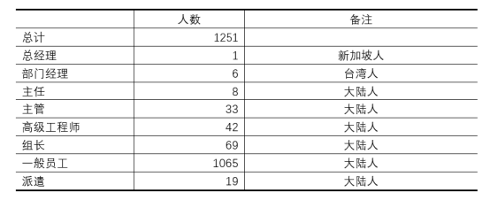
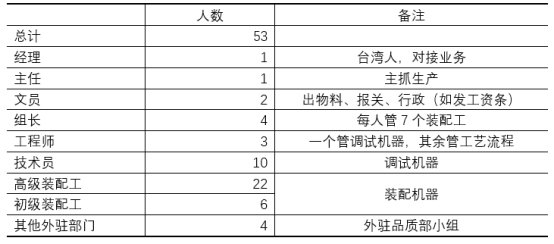
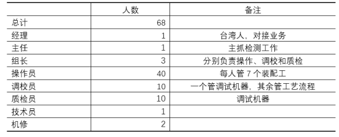
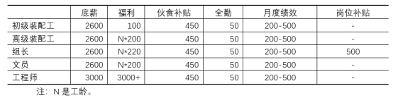
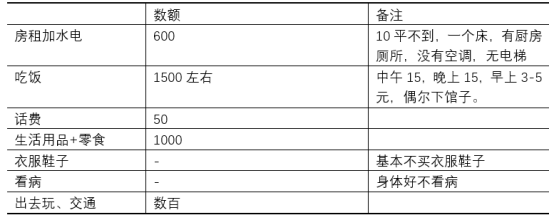
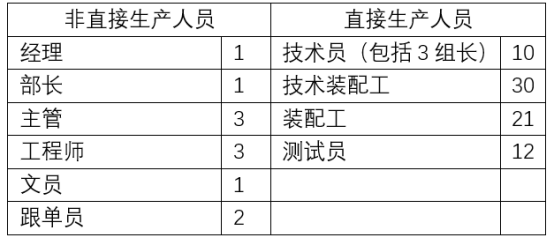
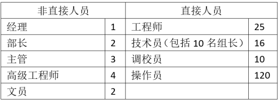
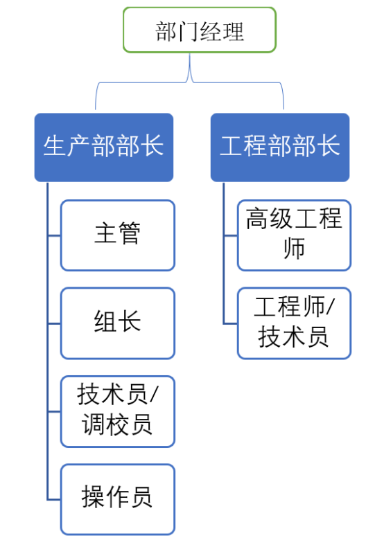
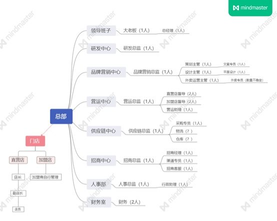

所谓阶级分析，至少需要：（1）研究某阶级诞生的历史；（2）研究某阶级不同群体的现状，包括规模、特点等；（3）研究该阶级与其他阶级之间的关系。
这样的研究，既需要我们以统计的方式进行全面的研究，也需要以访谈的方式进行个体素材的积累。这是一个系列工作，不是一两次调研能够完成的。
本次调研不可能全面掌握上述信息。首先，本次调研不涉及某阶级历史的研究；其次，本次调研也不会从统计角度研究某阶级不同群体的规模；最后，本次调研的方法基本不涉及以统计的方法进行研究，而主要是以访谈的方式进行个体素材的积累。
也就是说，本次调研的方法主要是访谈式的，目的是积累个体素材，为后续进一步分析打下基础。
在上述目的下，本次调研方法以访谈为主，下面大致介绍一下方法。
（一）调研别人
即志愿者根据自己能接触到的范围，选择某一类群体做访谈式研究，了解其劳动情况、生活情况、意识情况等等，在访谈中做出记录，并整理后形成初步的调研报告。
也就是说，本次调研分成如下步骤：
（1）拟定提纲。
（2）约好访谈对象，并明确告知其目的。如果对方意愿不强，不必强求，强求之下对方配合度不高，访谈很困难。每次访谈对象以2-3人为宜，不要太多。针对特定人员，如果一次访谈不完，可分成2-3次，也不宜次数过多。
（3）现场访谈并记录。需要按提纲一个个问题进行访谈，并详细记录原始材料。不建议录音后整理，因这样非常浪费时间，建议当场记录。
（4）第一时间整理访谈记录，形成调研文档。根据访谈和记忆，第一时间整理，不要拖延。
（二）以自己为样板
如志愿者以自己为样本，可按如下步骤进行：
（1）拟定提纲。
（2）按提纲一个个问题记录原始材料。
（3）第一时间整理原始材料，形成调研文档。
本次调研分成两类。
其一、结合某群体所在单位（劳动领域）进行调研
主要包括：（1）传统小资产阶级。城乡个体户，农村自耕农。（2）新兴小资产阶级。如大公司中层管理、中小型公司非股东的高管、专业技术人员如等级较高的工程师等。（3）脑力无产者。如基层程序员、办公室文员、技术员、基层工程师、中小学一线教师、办事员等。（4）体力无产者。如厂矿工人、建筑工人、新业态工人、服务业工人等。（5）新就业心态从业者。如网约车司机、快递员、外卖员等。（6）灵活用工情况。如劳务派遣工、小时工、学生实习工等。
其二、对农村进行调研
主要包括：（1）农村某村的基本情况。（2）农村某家庭的基本情况。（3）农村土地流转及承包的情况。（4）乡镇工业的情况。
建议大家拟定进度表。如下时间表仅供参考。
项目 | 时间节点 | 备注 |
启动 | 2022-01-16 |
|
拟定提纲并确定访谈对象 | 2022-01-24 |
|
第一次访谈 | 2022-01-30 |
|
整理第一次记录 | 2022-02-04 |
|
第二次访谈 | 2022-02-07 |
|
整理第二次记录 | 2022-02-12 |
|
汇总成调研报告 | 2022-02-21 |
|
（一）截止日期
投稿的截止日期为2022年2月28日。
（二）投稿邮箱
调研文档请以word形式发送至邮箱：zuoyi24@protonmail.com
（三）注意事项
切勿涉及敏感单位和敏感信息，切勿泄露国家机密或者商业秘密。为保护个人安全，请将调研报告中的敏感信息隐去。
（四）更多交流
如果您希望有更多交流，可以写邮件。
如果您方便，请在邮件中大致介绍一下您的情况，您可从如下方面介绍：（1）职业和年龄。（2）您的家庭情况，成长经历，特别是思想成长经历。（3）您对社会的看法。（4）您所工作的城市，或者读书的城市。
如果上述信息已经在之前的邮件中介绍过，您可以忽略。
下面列举的提纲仅供参考，您需要根据调研对象的情况作出改动。
提纲服务于调研目的，我们的目的是要了解不同劳动者的情况，以工厂（公司）提纲为例，它至少需要涉及如下方面：（1）工作单位的基本情况。（2）工作单位的人员情况。（3）调研对象的劳动内容和劳动场所的情况。（4）调研对象的薪酬待遇、工作时间。（5）调研对象所在单位的管理情况。（6）调研对象的生活与开支情况。（7）调研对象的意识情况，比如对不公采取何种态度，是否能主动争取权益，等等。（8）其他情况。
（一）基本信息
1．身份信息：厂名、厂址和建厂时间。
2．投资性质：外资/私企/国企。
3．生产信息：所在行业；生产什么产品，上下游企业。
4.公司管理结构和部门构成。首先，描述公司层级情况，如经理-部长-主管-组长-员工；其次，描述公司部门构成，如公司分成职能部门和生产部门，生产部门共有四个，分别是A\B\C\D，各部门负责事项，相互之间的工艺结构（如零件组装部-整机组装部-喷涂部）。
（二）工厂工人
1．人员情况：人数、男女比例、年龄结构、地域分布。
2．用工情况：有无派遣工，有无小时工。如有，比例如何。
3．原生家庭：农村还是城市，大致比例如何。
4．工厂流动性大吗，如果大，原因何在。3年以上工龄工人多吗，具体比例如何。
5. 按工种分：有哪些工种，各工种工人的数目、性别和年龄情况，不同工种工人的年龄最高限制，流动性，录用条件（年龄和学历等），是否有职业病。如果不能列举全部，就列举自己熟悉的。
（三）劳动条件
1．具体描述各工种劳动过程。（1）是否流水线。如不是，那是什么。（2）一个工人的劳动过程：从开始到结束的一个完成劳动过程（如描述大螺丝的过程）。（3）一个部门的劳动过程：谁制定计划，谁安排任务，谁具体生产，谁负责监督，相互关系。（4）工人在劳动中是否站立，能否走动，上厕所是否受限。（5）单调乏味和令人生厌的程度。
2．工作环境。车间是否拥挤，温度和清洁情况如何，有无噪音和粉尘，有无有毒有害物质。最差的部门（粉尘、高温、毒害等）是哪一个。
3. 工人一天的生活：几点上班，几点吃中午饭，中午休息多久，下午几点上班，几点吃晚饭，是否连班，晚上几点下班，下班后做什么，几点休息。一天中最累的时候是什么时候，一天中最开心的时候是什么时候。
4．工伤和职业病。有无工伤危险，有无职业病危险，请具体举例。安全事故频繁吗，都有哪些，因何引起（如疲劳操作、没有保护措施），请具体举例。工人对此持何态度——举出事实。
5．出现工伤和职业病，一般是怎么处理的。厂里面会隐瞒工人职业病吗，会和医院勾结，不将体检报告提示工人吗。
（四）薪酬待遇
1． 是否包吃住，如果包吃住，是否付费，以及怎样付费。
2. 按工种列出工人基本工资，并与当地最低工资比较。按工种列出工人工资构成，如：基本工资2000，工龄工资150，加班工资1800，无岗位补贴。
3. 工人工资是计件还是计时。如果是计件，有无如下情况：原本单价在3元/件，工人效率提高后，资方将单价变成2元/件，导致工人每日所得并无增加。如果是计时，有无如下情况：资方通过提高流水线速度，或者其他方式，提高工人劳动强度。
4. 近5年来，工资涨幅如何，并说明原因。
5．如有派遣工人/小时工，厂方和多少派遣公司合作，会否勾结派遣公司克扣工资，请具体说明。派遣工和小时工待遇如何，请详细说明。
6．每月发薪日是几号，厂方是否会押一个月或半个月工资。
7．是否有明显的淡旺季，请具体说明，比如哪个月是旺季，工作时间，哪个月是淡季，工作时间。
8．厂方与工人是否签订劳动合同，如果签了，工人是否能拿到合同。
9．社保和公积金。是否购买社保和公积金（购买了哪些），如果购买，是按底薪购买，还是按真实工资购买。如果不购买，工人态度如何，有无维权。
10. 加班费。是否按劳动法支付加班费。有没有通过任意调班的方式，来规避加班费，比如：春节在2月17号，2月1日至14日天天上班11小时，2月15至2月28日全部放假，以此调休，不支付加班费。
11. 其他福利。逢年过节，或者其他福利，请举例。
12. 资方在支付薪酬和购买社保公积金时，还有哪些花招欺骗工人，请详细列举。
（五）工作时间
1．按工种的工作时间。周一至周五加班情况，周末加班情况。有无要求提前15分钟早会，延后15分钟下班清理机器。
2. 倒班情况。长白班/两班倒/其他。工人对倒班的态度。
3. 休息。固定休周末/轮休。工人对轮休的态度，有无抱怨。
4. 有无明显淡旺季，淡旺季工人加班情况如何，请具体说明。
5. 每天吃饭时间多长。每天什么时候感觉最疲惫。
6. 最长的一次，连续工作多少时间没有休假。
（六）工厂主管、组长和工程师（技术员）
1．列出车间的管理结构。如普工-组长-主管-部长。
2. 描述不同层级的人在车间都做什么，有什么权力，大致收入如何。比如，主管、组长在采购原材料、奖金分配、部门资金使用、工人请假、工人升职加薪、调整工人福利待遇、安排工人工作、分配工人加班，等等方面，分别有什么权限，是建议权，还是批准权，等等。
3. 列出车间其他人员情况。如技术员、工程师、工厂文员，等等。分别大致描述这些人的工资构成、加班时间、工作环境等等，同时，描述这些人的层级构成，及这些人在单位的权限（这部分如果难以描述就忽略）。
4. 工人对上述人员的态度；如果出现罢工等斗争事项，这些人会如何表现，比如，什么层次的人会和工人一起站出来，什么层次的人不站出来，但是私底下帮着出主意，什么层次的人会站资方立场打压工人。
5. 工人有无偷盗行为，工厂是否会搜身，请详细说明。
6. 管理人员有无贪腐行为，有无灰色收入，如有，请具体举例。
（七）管理和罚款
1．厂方管理严还是松，请大致描述。
2. 管理人员有无辱骂、训斥、甚或殴打工人的行为，如果有，工人是否抗议，以及效果如何。
3. 工人请假能否批准。
4. 辞工是否顺利，有没有辞工不批逼迫自离的。如果自离发工资吗。
5. 工人能正常休年假、病假、产假吗。请具体说明。
6．罚款。列举罚款种类（因迟到罚款，迟到多久罚款，例如迟到15分钟、半天，因缺勤、旷工和不听话等）；罚款数额，多举例子说明。
（八）工会和文娱活动
1．工厂是否有工会，工人知道工会存在吗，知道工会主席的办公室在哪里吗。工会平时都做什么。
2．工厂有无文娱活动的地方，比如，有无活动室，阅览室，有无工人组建的兴趣社团。
3. 工人权益受到侵犯的时候，会去找工会吗
（九）生活和消费支出
1．居住条件。单位提供/租房/自有住房。工棚/宿舍（几人一间）/小区/城中村/其他（请具体描述环境和面积）。大致描述内部设施，有无空调，洗衣机，热水器，有无跳蚤蚊虫，卫生情况，等等。在居住方面有无遭遇不公，比如被中介骗，被房东欺负，等等。
2. 日常开销。请大致列举每月花销情况。衣食住行，基本社交，看病就医，抚养小孩，赡养老人，等等。伙食方面请大致描述，卫生情况，营养情况，在外面吃还是自己买，等等。
3. 娱乐。日常有哪些娱乐活动，请详细列举。是否喜欢用抖音、快手等娱乐APP，最喜欢用的娱乐APP有哪些，请列举3-5个。
4. 获取咨询。通过哪些渠道了解新闻，最喜欢用的新闻类APP有哪些，请列举3-5个。
（十）权益情况
1．抗议和停工。详细列举每起事件和事件爆发的缘由、经过、后果及结果。工人过去和现在有无表现出某种希望团结的意向，如果有，这种意向具体表现在什么地方，如果没有，原因何在。多举例子说明。并分析，这种抗议和停工，是进攻性还是防守性，是主动要求提高待遇，还是既有待遇无法落实而维权。
2．工人对这种捍卫自己利益的手段持何种态度。
3. 不同管理人员对工人抗争的态度如何。
4．遇到权益纠纷，工人会去找哪些部门，这些部门态度如何，具体怎么处理的，请举例说明。
（十一）阶级分析
1.无产阶级。哪些人是工厂的无产阶级，比如工人、工厂基层文员、基层工程师，等等，要从收入、劳动地位、意识等各方面分析。
2. 新兴小资产阶级。哪些人是新兴小资产阶级，比如部门经理。要从收入、劳动地位、意识等各方面分析。
3. 资产阶级。哪些人是新兴小资产阶级，比如总经理，股东，等等。要从收入、劳动地位、意识等各方面分析（此处无法了解可忽略）。
如果您调研的人员无法描述厂或部门情况，您可以针对其个人进行调研。提纲与上述提纲基本类似，只是多了一些个人身份信息。
（一）基本信息
1．个人基本信息：性别、年龄、教育程度、婚姻状况（如果有子女，子女几人，多大，在老家还是在身边）、政治面貌、户籍、出来打工年限、在本厂的工龄。
2. 工厂基本信息：（1）厂名、厂址和工厂规模；（2）外资/私企/国企；（3）所在行业以及生产什么产品，上下游企业；（4）公司管理结构（如经理-部长-主管-组长-员工）；公司按工艺流程分的部门结构（如零件组装部-整机组装部-喷涂部）。
（二）用工基本信息
1．是派遣工还是正式工。
2．具体做什么工种，工种流动性大吗，如果大，原因何在。3年以上工龄工人多吗，具体比例如何。
3. 本工种工人的年龄情况，录用条件（年龄和学历等），是否有职业病。如果不能列举全部，就列举自己熟悉的。
4．两班倒还是长白班，轮休还是休周末。
（三）劳动条件
1．具体描述劳动过程。（1）是否流水线。如不是，那是什么。（2）本人劳动过程：从开始到结束的一个完成劳动过程（如描述大螺丝的过程）。（3）本部门的劳动过程：谁制定计划，谁安排任务，谁具体生产，谁负责监督，相互关系。（4）在劳动中是否站立，能否走动，上厕所是否受限。（5）单调乏味和令人生厌的程度。
2．工作环境。车间是否拥挤，温度和清洁情况如何，有无噪音和粉尘，有无有毒有害物质。最差的部门（粉尘、高温、毒害等）是哪一个。
3. 一天的生活：几点上班，几点吃中午饭，中午休息多久，下午几点上班，几点吃晚饭，是否连班，晚上几点下班，下班后做什么，几点休息。一天中最累的时候是什么时候，一天中最开心的时候是什么时候。
4．工伤和职业病。有无工伤危险，有无职业病危险，请具体举例（包括本人和所知道的工友）。
5．出现工伤和职业病，一般是怎么处理的。厂里面会隐瞒工人职业病吗，会和医院勾结，不将体检报告提示工人吗。
（四）薪酬待遇
1．是否包吃住，如果包吃住，是否付费，以及怎样付费。
2. 基本工资多少，当地最低工资多少。工资构成，如：基本工资2000，工龄工资150，加班工资1800，无岗位补贴。
3. 工资是计件还是计时。如果是计件，有无如下情况：原本单价在3元/件，工人效率提高后，资方将单价变成2元/件，导致工人每日所得并无增加。如果是计时，有无如下情况：资方通过提高流水线速度，或者其他方式，提高工人劳动强度。
4. 近5年来，工资涨幅如何，并说明原因。
5．如有派遣工人/小时工，厂方和多少派遣公司合作，会否勾结派遣公司克扣工资，请具体说明。派遣工和小时工待遇如何，请详细说明。
6．每月发薪日是几号，厂方是否会押一个月或半个月工资。
7．是否有明显的淡旺季，请具体说明，比如哪个月是旺季，工作时间，哪个月是淡季，工作时间。
8．是否签订劳动合同，如果签了，是否能拿到合同。
9．社保和公积金。是否购买社保和公积金（购买了哪些），如果购买，是按底薪购买，还是按真实工资购买。如果不购买，你的态度如何，有无维权。
10. 加班费。是否按劳动法支付加班费。有没有通过任意调班的方式，来规避加班费，比如：春节在2月17号，2月1日至14日天天上班11小时，2月15至2月28日全部放假，以此调休，不支付加班费。
11. 其他福利。逢年过节，或者其他福利，请举例。
12. 有没有遇到过拖欠工资，请详细举例。
13. 资方在支付薪酬和购买社保公积金时，有哪些花招欺骗工人，请详细列举。
（五）工作时间
1．周一至周五加班情况，周末加班情况。有无要求提前15分钟早会，延后15分钟下班清理机器。
2. 倒班情况。长白班/两班倒/其他。你对倒班的态度。
3. 休息。固定休周末/轮休。你对轮休的态度，有无抱怨。
4. 有无明显淡旺季，淡旺季工人加班情况如何，请具体说明。
5. 每天吃饭时间多长。每天什么时候感觉最疲惫。
6. 最长的一次，连续工作多少时间没有休假。
（六）工人与主管
1．列出车间的管理结构。如普工-组长-主管-部长。
2. 描述不同层级的人在车间都做什么，有什么权力，大致收入如何。工人对他们的态度；如果出现罢工等斗争事项，这些人会如何表现，比如，什么层次的人会和工人一起站出来，什么层次的人不站出来，但是私底下帮着出主意，什么层次的人会站资方立场打压工人。
3. 工人有无偷盗行为，工厂是否会搜身，请详细说明。
4. 管理人员有无贪腐行为，如有，请具体举例。
（七）管理和罚款
1．厂方管理严还是松，请大致描述。
2. 管理人员有无辱骂、训斥、甚或殴打工人的行为，如果有，工人是否抗议，以及效果如何。
3. 工人请假能否批准。
4. 辞工是否顺利，有没有辞工不批逼迫自离的。如果自离发工资吗。
5. 工人能正常休年假、病假、产假吗。请具体说明。
6．罚款。列举罚款种类（因迟到罚款，迟到多久罚款，例如迟到15分钟、半天，因缺勤、旷工和不听话等）；罚款数额，多举例子说明。
（八）工会和文娱活动
1．工厂是否有工会，你知道工会存在吗，知道工会主席的办公室在哪里吗。工会平时都做什么。
2．工厂有无文娱活动的地方，比如，有无活动室，阅览室，有无工人组建的兴趣社团。
3. 你权益受到侵犯的时候，会去找工会吗。
（九）生活和消费支出
1．居住条件。单位提供/租房/自有住房。工棚/宿舍（几人一间）/小区/城中村/其他（请具体描述环境和面积）。大致描述内部设施，有无空调，洗衣机，热水器，有无跳蚤蚊虫，卫生情况，等等。在居住方面有无遭遇不公，比如被中介骗，被房东欺负，等等。
2. 日常开销。请大致列举每月花销情况。衣食住行，基本社交，看病就医，抚养小孩，赡养老人，等等。伙食方面请大致描述，卫生情况，营养情况，在外面吃还是自己买，等等。
3. 娱乐。日常有哪些娱乐活动，请详细列举。是否喜欢用抖音、快手等娱乐APP，最喜欢用的娱乐APP有哪些，请列举3-5个。
4. 获取咨询。通过哪些渠道了解新闻，最喜欢用的新闻类APP有哪些，请列举3-5个。
（十）权益情况
1．抗议和停工。详细列举每起事件和事件爆发的缘由、经过、后果及结果。工人过去和现在有无表现出某种希望团结的意向，如果有，这种意向具体表现在什么地方，如果没有，原因何在。多举例子说明。并分析，这种抗议和停工，是进攻性还是防守性，是主动要求提高待遇，还是既有待遇无法落实而维权。
2．工人对这种捍卫自己利益的手段持何种态度。
3. 不同管理人员对工人抗争的态度如何。
4．遇到权益纠纷，你会去找哪些部门，这些部门态度如何，具体怎么处理的，请举例说明。
（一）基本信息
1.业务性质：主要经营哪些业务，加盟还是独立经营？
2.营业场所：流动经营还是固定门面，位置情况如何，门面是自有还是租来的，主要做外卖还是堂食？
3.雇佣情况：自营（如个人、夫妻店）还是雇佣店员？
（二）经营情况
1.营业许可：开业需要走哪些流程（如营业执照、食品证办理）、涉及哪些有关部门、中间是否有吃拿卡要，日常需要和哪些部门（如城管、卫生）打交道、一般情况如何？
2.外部限制：营业过程中可能遇到哪些外部限制（如被附近居民投诉至派出所、黑社会骚扰等）？
3.日常经营：日常经营情况大致如何，消费群体有何主要特征，是否有明显淡旺季？
4.前期投入情况：前期有哪些一次性投入（相关手续、打点关系、门店装修、设备器材、加盟培训等）。
5.成本情况：（1）房租水电等费用。房租水电、物业费，等等，占整个成本的比例。租房合同几年一签，合同期内房租是否涨价，涨幅如何。合同期结束后，房租是否涨价，涨幅如何。近五年来，房租水电物业是否涨价，情况如何。（2）原材料。主要原材料有哪些，每月原材料花费多少，占整个成本的比例。占比最大的前五项原材料是哪些，占比多大。这些原材料近五年来价格波动情况。（3）人工。工人工资（如有），店主是否给自己（以及工人）买社保和公积金，整体人工占成本的比例。近五年来，人工变动情况。店主是否定期体检，费用如何。（4）有外卖吗？如有，平台抽成费用。（5）是否有税收或其他费用，情况如何。
6.收入情况。日流水，月流水，每月净收入。请详细计算收入、成本、净收入之间的关系，并列表，下表为示例。
事项 | 金额 | 备注 |
每月收入合计 | 30000 |
|
每月支出合计 | 20000 |
|
房租水电等 | 10000 |
|
人工等 | 300 | 公积金 |
原材料等 | 7000 |
|
平台抽成 | 2000 |
|
其他 | 700 | 具体标明事项 |
税收合计 | 200 |
|
每月净收入 | 9800 |
|
7、疫情影响。受疫情影响大不大，请具体列明销售收入等受疫情影响的情况。并分析，销售额维持在何种水平才不致亏损。
（三）工作情况
1.工作流程：每天主要有哪些工作内容，大概流程如何。请按时间顺序描述一天的工作。比如，早上6点起床，6点半买菜，7点洗菜，7点半开餐，早高峰最忙时间为8点至9点，10点后可略微休息，随后……，晚11点收工，等等。要清晰描述一天的劳动过程，何时忙，何时相对轻松，两者时间占比。工作强度大不大，自我感知累不累，等等。如果累，请具体描述哪里累，最难受的地方，等等。一天中最累的时候是什么时候，一天中最开心的时候是什么时候。
2.人员情况：主要劳动人员基本情况，如年龄、性别、相互关系（比如夫妻）等，人员相互分工；如果雇佣工人，是否签署劳动合同、是否购买五险一金、流动性如何？
3.具体劳动情况：劳动环境是否脏乱差，劳动时间多长，有无工伤/职业病？
4.薪酬待遇：如果雇佣，工资结构如何、如何支付、如何调整、是否按时支付、有无罚款，是否包吃住、有无其他福利？有无相关的日常或集中斗争？
（四）其他情况
1.房东方面：房租如何收取（如押一付三）、是否签署合同、有无额外敲诈，近几年上调比例如何，疫情期间有无优惠政策，是一手房东还是多方转手？
2.加盟总部：加盟采取何种模式、收取哪些费用、如何收取（一次性、每年固定、销售额抽成等），加盟总部用何种方式控制各门店（统一供货、餐饮秘方等）、围绕这些有哪些利益冲突和规避方式？
3.外卖平台：商家在平台有哪些基本活动？平台主要有哪些机制、平台要如何营收（推广费、按单抽成等）？商家和外卖员有哪些接触、有无冲突？
4.同行竞争：情况描述（一条街上，或者一个大的商业区内，有多少家类似的店铺。比如，一条一百米的商业街上，有六家类似的奶茶店）。同行竞争大致情况如何，有无相互降价，有无相互约定不降价，等等。有没有感觉到大资本、连锁集团对自己的挤压，如果有，请具体描述。
5. 基本趋势。近几年来，生意是越来越好做，还是越来越难做，或者大致持平；收入增加还是减少，或者基本维持；劳动时间是增多了，还是变少了，或者差不多。有没有扩大店面，或者增加人手的打算。
6. 未来打算。打算继续做生意，还是回去打工，或者其他打算。
（5）基本分析
1. 事实分析。通过投入的劳动、收入，与当地打工人群进行比较。比如，投入两个人，每天工作16小时，每月无休，合计每月净利润14000。如果当地最低工资是2200，则小时工资为12.64[2200/(21.75*8）]，如果打工人群也是每月无休，每天16小时，则每人工资合计2200+12.64*8*1.5*21.75（日常加班）+12.64*16*2*8.25（周末加班），单人收入8837，两人合计17674。但是工人不会这样加班，因此工资不可能这样高。如此可得出结论，小资产阶级通过超长自我压榨，获取略高于工人的工资。
2. 趋势分析。从原材料、租金、客户消费能力等各方面分析，生意是越来越好做，还是越来越难做。
3. 群体分析。问问老板，类似的小老板，他们的情况是怎么样的。生意扩大了，还是缩小了，有没有破产倒闭的，破产去哪里了，等等。请老板多举几个例子，详细描述。
4. 诉求分析。描述这个群体的意识情况。他们最讨厌的三个事情或人群是什么（比如房东），他们最希望改变的三个事情是什么。
5. 阶级分析。通过上述整个报告，对该群体的阶级意识做出初步描述。
一、开放式提问
（此部分主要是让访谈对象可以自由的表达看法，在这个过程中要注意互动交流，分享信息，以期和受访者建立一个良好的关系。）
1.您觉得这份工作有什么特点？
2.跟其他工作比怎么样？
3.对所服务的平台或者公司都有什么看法？
二、结构式提纲
（一）劳动者基本情况
1.身份信息：性别、年龄、籍贯、农村还是城市、学历。
2.打工经历：什么时候开始出来打工；都去过哪些地点；做过哪些工作；这些工作都做了多长时间；工资待遇怎么样；为什么离职。
3.当前工作是否是唯一收入来源？
4.专送还是众包：代理商进行管理还是平台进行直接管理？
5.新就业形态的工作干了多长时间？是否愿意继续干下去？为什么？
（二）劳动条件
1.劳动所需的工具例如电动自行车、等其他工作工具等等是由谁提供的？成本是多少？需要借贷购买吗？工作多长时间能赚回来？
2.工作环境。是否长期在户外？在户外工作时间如何休息？如果是代理商或平台是否会提供休息的场所？恶劣天气是否必然会出勤？
3.工伤和职业病。长期从事身体会有哪些不舒服？常见的工伤和职业病有哪些种类？概率有多大？
4.劳动保护用具等是否具备？有谁提供？你认为应该有谁提供？
（三）工作情况
1.规定每月、每天工作多长时间？实际每月、每天工作多长时间？
2.是否存在轮班、倒班；是否存在淡季、旺季；对工作、收入等产生什么影响，有无不满？
3.规定每月、每天或每个周日的工作任务量是多少？每天实际能完成多少？
4.是否是计件工资？是否是阶梯制计算单价？可以一每月的工资条为例，讲一讲工资构成？你如何看待计件工资？
5.是否有加班费、奖励制度、福利等？如何执行和计算？如何看待此制度？
6.单价、月收入、年收入等近几年是否存在下降趋势？可否详细讲一讲？
7.代理商或平台是否提供住宿？住宿条件和住宿花费相较于自己租住如何？
（四）劳动管理
1.谁来进行管理，平台还是代理商？还是两者都有？有无明确的管理制度，如果有，请进行提供。
2.管理制度的严苛程度如何？如何体现？
3.是否存在罚款？罚款的名目有哪些？
4.休假制度具体如何？能否休病假、产假、年假？事假是否会批准？弹性有多大？请假如何让对工资产生影响？
5.离职制度具体如何规定。是否合法，劳动者感受如何，是否进行抗争。
6.管理方式。是否存在辱骂、打骂等情况。劳动者感受和抗争请跨国
（五）权益意识
1.是否了解代理商或者平台与自己时是什么关系？
2.认为平台或者代理商有没有违法的地方？具体有哪些？
3.认为平台或者代理山给有没有不合理的地方，具体有哪些？
4.你所了解的此类劳动者遇到纠纷会如何处理？具体事例有哪些？能否详细讲述一下？
5.你认为此类劳动者是否需要互帮互助？哪些方面能够互帮互助？
（六）消费和支出
1.劳动所需：列举需要自己购买得劳动所需要的工具和劳保用品，一次性消费或者每月的开销在多少前？
2.个人消费：列举自己每月在外衣食住行的开销，以及结余多少。
3.家庭开销：家庭人数和家庭结构。家庭收入和消费结构。
（七）劳动者、代理商和平台
1.自己所在的团队是什么性质？平台直接管理还是有代理商进行管理
2.团队劳动者：多少人？年龄比例、性别比例、城市农村比例，本地外地比例？
3.团队管理者：管理者分为几个层级，分别有什么样的管理权力？管理者是否和劳动者做同样的工作？与一般劳动者有什么区别？
4.团队劳动者的流动性如何？为什么？
5.是否了解平台-代理商之间的分成比例和相互关系？
（一）基本信息
1．身份信息：厂名、厂址和建厂时间。
2．投资性质：外资/私企/国企。
3．生产信息：所在行业；生产什么产品，上下游企业。
（二）工厂工人
1．工厂人员情况：人数、男女比例、年龄结构、地域分布。
2．非正式工的用工情况：有无派遣工，有无小时工，实习学生工等非正式工。如有，比例如何。是否有明显的淡旺季，请具体说明，比如哪个月是旺季，工作时间，哪个月是淡季，工作时间。淡旺季使用非正式工的情况如何。
3.非正式工的招聘渠道：工厂旺季临时用工需求量比较大时，如何解决。非正式工（派遣工、小时工、实习学生工等）的招聘渠道有哪些，如通过中介、工厂直招、职校实习、正式工介绍。
4.非正式工基本情况：从事工种、年龄、性别，流动性，是否兼职等。
（三）劳务派遣
1.合同：派遣公司与工人是否签订劳务派遣合同，如果签了，工人是否能拿到合同。合同是否约定清楚工人派到那个单位工作。
2.薪酬：合同是否约定清楚工资发放的标准，按工种列出工人基本工资，并与当地最低工资比较，与正式工工资比较，是否同工同酬。按工种列出工人工资构成，如：基本工资2000，工龄工资150，加班工资1800，无岗位补贴。
3.福利待遇：派遣工与正式工福利待遇是否一样，是否包吃住，如果包吃住，是否付费，以及怎样付费。
4.工资发放：劳务派遣合同是否约定清楚工资发放的时间。由派遣公司发工资，还是由用工单位代发。是否会押一个月或半个月工资。有无拖欠过工资，有无克扣过工资。如有，工人采取的办法有哪些，是否有过集体维权，是否成功。
5.社保和公积金。是否购买社保和公积金（购买了哪些），如果购买，是按底薪购买，还是按真实工资购买。是派遣公司购买，还是用工单位代缴。如果不购买，工人态度如何，有无维权？
6.工伤和职业病。有无工伤危险，有无职业病危险，请具体举例。安全事故频繁吗，都有哪些，因何引起（如疲劳操作、没有保护措施），请具体举例。派遣工发生工伤后工厂和派遣公司如何处理。
7.企业生产淡季，如何处理多余的派遣工，是直接退回派遣公司吗？退回派遣公司后，派遣公司是否会安排其他工作，如果安排了,工资及上班时间、地点有无显著变化（上班地点更加偏远，工资降低等）；如果没有安排，是否发送当地最低工资，没法放的如何处理。
8.企业的管理，严还是松。管理人员有无辱骂、训斥、甚或殴打工人的行为，派遣工是否受企业管理人员或正式工排挤。
9.派遣工请假是否批准。
10.辞工是否顺利，有没有辞工不批逼迫自离的。如果自离发工资吗。
11.工人能正常休年假、病假、产假吗。请具体说明。
12罚款。列举罚款种类（因迟到罚款，迟到多久罚款，例如迟到15分钟、半天，因缺勤、旷工和不听话等）；罚款数额，多举例子说明。
（四）小时工/日结工
1.公司是否用小时工/日结工，比例如何，是否分明显的淡旺季，旺季用工量如何？
2.小时工工时如何计算，每小时多少钱，每天工作多长时间？是否存在没有计算工资的免费工时（如开工前的训话时间、正常计算工时前提前进入产线工作、工作结束后不计算工时的打扫卫生等），免费工时每天累计有多长时间？
3.小时工工资如何结算，当天现结，还是过段时间再结算。是否存在克扣工资的情况。是否存在拖欠工资的情况。工人是如何争取工资的。
4.找小时工的渠道是什么，通过中介，还是工厂直招。通过中介的，是否每天去中介中心等待，是否收取身份证和服务费。没有收取服务费的是否知道被中介抽取多少的人头费。
5.小时工工资浮动情况，近5年的情况，1年终不同季节小时工工资的浮动情况。
6.是否有长期在固定工厂工作的小时工，一般做多久，除去五险一金与正式工日工资相差多少。是否包吃住，是否如果包吃住，是否付费，以及怎样付费。
7.小时工从事的工种主要有哪些，如印刷厂包装，快递物流分拣、装卸货，流水线普工等。
8.小时工兼职和全职的情况如何，专门从事兼职的主要原因是什么。在休息日打日结工的比例多不多，工人的想法怎么样。
9.有无工伤危险，有无职业病危险，请具体举例。安全事故频繁吗，都有哪些，因何引起（如疲劳操作、没有保护措施），请具体举例。遇到工伤怎么处理，工厂或者中介是否会付医药费，工人对此的态度如何。
10.企业的管理，严还是松。管理人员有无辱骂、训斥、甚或殴打工人的行为，小时工/日结工是否受企业管理人员或正式工排挤。
12罚款。列举罚款种类（因迟到罚款，迟到多久罚款。规定任务量，因没有完成任务量等。因规定产量，因劣品较多等。）；罚款数额，多举例子说明。
（五）学生实习工
1.学校名称、专业，学校是否强制统一安排实习。实习的工厂名称、从事的工种。实习的工作与所学专业有无关联性。
2.实习的时间有多久，是否有强制要求。实习一般放在暑期，还是大三整个学年都要实习。是否可以自己找实习单位开实习证明。如果没有达到学校要求的实习时间，学校会怎么处理，能否正常拿到毕业证。
3.实习期间学校或工厂是否向学生收取交费。实习期间的工作时间有多久，与正式工从事的工种，以及劳动时间、强度有无差别。
4.实习期间学生有无工资，加班有无加班费，加班费是如何计算的，是否按照劳动法计算。有没有通过任意调班的方式，来规避加班费，比如：春节在2月17号，2月1日至14日天天上班11小时，2月15至2月28日全部放假，以此调休，不支付加班费。实习工资与正式工有无差别，差别多少。
5.工资发放：由工厂发工资，还是由学校代发。是否会押一个月或半个月工资。有无拖欠过工资，有无克扣过工资。如有，学生工采取的办法有哪些，是否有过集体维权，是否成功。
6.实习期间是否签订协议，如何约定的。是否知道学校及老师与工厂之间的交易，如学校及老师按照实习人头领取工厂的费用。
7.工伤和职业病。有无工伤危险，有无职业病危险，请具体举例。安全事故频繁吗，都有哪些，因何引起（如疲劳操作、没有保护措施），请具体举例。学生工发生工伤后工厂和学校如何处理。
8.企业的管理，严还是松。管理人员有无辱骂、训斥、甚或殴打工人的行为，学生工是否受企业管理人员或正式工排挤。
9.学生工请假是否批准。
10.中途退出实习是否顺利，中途离开学校能否顺利毕业。已经实习期间的工资能否正常拿到。
11.学生工能正常休年假、病假、产假吗。请具体说明。
12罚款。列举罚款种类（因迟到罚款，迟到多久罚款，例如迟到15分钟、半天，因缺勤、旷工和不听话等）；罚款数额，多举例子说明。
（一）基本信息
1．个人基本信息：性别、年龄、教育程度、婚姻状况（如果有子女，子女几人，多大，在老家还是在身边）、政治面貌、户籍、出来打工的年限、在本校的教龄。
2．学校基本信息：（1）小学/初中/高中，学校规模；（2）公办/民办；（3）学校的情况（市重点/省重点/非重点/贵族学校）（4）学校管理结构。
（二）用工基本信息
1．有编无编？是否有签合同？
2．具体教什么科目，教学会经常变动吗？学校的教师流动性大吗？老教师多吗？
3.教师的年龄情况，录用条件（年龄和学历等），是否有职业病。如果不能列举全部，就列举自己熟悉的。
4．每天要工作多少个小时？周末、寒暑假放多久？
5.工资怎样计发？固定工资？是否有绩效和补贴？工资在当地各行各业里大概什么水平？
（三）劳动条件
1．具体描述工作过程。（1）能否举例描述一下教学中某部分知识从备课到总结这一个小周期的过程？除了课程本身外，老师们还要负责哪些工作内容，如自习、住宿、学生早恋、打架这些？（2）教研组的分工与合作：谁制定计划，谁组织教学讨论，谁具体制作课件，谁负责督促落实，相互关系是怎样的。（3）学校其他部门的权责，和普通老师的关系。（4）你喜欢教课吗，工作让你感觉有趣，还是单调乏味，或者令人生厌。
2．工作环境和劳动条件。办公室是否拥挤，温度和清洁情况如何，有无噪音和粉尘？教学设备配备是否齐全，有无投影仪、空调？上下班有无通勤车接送？
3．一天的生活：几点上班，几点吃午饭，中午休息多久，下午几点上班，几点吃晚饭，晚上几点下班，下班后做什么，几点休息。一天中最累的时候是什么时候，一天中最开心的时候是什么时候。
4．工伤和职业病。有无职业病危险，请具体举例。
5．出现工伤和职业病，一般是怎么处理的。学校每年会组织体检吗？是否免费？
（四）薪酬待遇
1．是否包吃住？如果包吃住，是否需要个人付费，以及怎样付费。
2．老师的基本工资多少，当地最低工资标准是多少。工资构成，如：基本工资2000，工龄工资150，加班工资1800，无岗位补贴。
3．近5年来，工资涨幅如何，并说明原因。
4．有编和无编区别大吗？
5．每月发薪日是几号，学校是否会押一个月或半个月工资？
6．是否签订合同？老师能否拿到自己的合同？
7．社保和公积金。是否缴交五险一金（购买了哪些），如果缴，缴费基数是按底薪算，还是按真实工资？如果不缴，你的态度如何，有无维权。
8．加班费。是否依法支付加班费？如早晚自习、查寝、值班、寒暑假补课等。学校是否会通过调班来规避加班费，如安排法定休息日上班，工作日休息？
9．其他福利。逢年过节，或者其他福利，请举例。
10.有没有遇到过拖欠工资，请详细举例。
11.学校在支付薪酬和购买社保公积金时，有哪些花招蒙骗老师们，请详细列举。
12.教师里在外开辅导班的多吗？是自己开还是去机构兼职？
13.辅导班挣钱多吗？老板会拖欠工资吗？
（五）工作时间
1．周一至周五加班情况，周末加班情况。是否以各种会议名义无偿延长劳动时间？
2．可以请假吗？好请吗？请假扣钱吗？
3．寒暑假要值班、开会吗？算加班吗？付加班费吗？
4．每天吃饭时间多长。每天什么时候感觉最疲惫。
5．最长的一次，连续工作多少时间没有休假。
（六）领导情况
1．描述不同层级的人有什么权力，大致收入如何。权力方面包括：人事权、财政权等等，比如，决定老师升职加薪，决定采购，批准老师请假，等等。教师对他们的态度。最怕或者最讨厌哪个领导，校长/主任/年级组长？为什么？
2．教师有怎样的上升路线？凭职称的名额多吗？每人平均多久能有一次升迁？
3．老教师对新教师的态度如何？会帮助新教师或欺负新教师吗？
4．管理人员有无贪腐行为，如有，请具体举例。进编或评优要送礼吗？
5．有没有性骚扰或者权色交易的情况？后来怎么样了？
（七）管理和罚款
1．学校对老师的管理是严苛还是宽松，请大致描述。
2．管理人员有无辱骂、训斥、威胁甚或殴打老师的行为，如果有，老师是否抗议，以及效果如何。
3．辞职容易吗，有没有辞职不批的？辞退是否有经济补偿？如果自离，发工资吗？
4．能正常休病假、产假吗。请具体说明。
5．罚款。列举罚款种类（因迟到罚款，迟到多久罚款，例如迟到15分钟、半天；因缺勤、旷课和顶撞领导罚款等），罚款数额，多举例子说明。
（八）工会和文娱活动
1．学校是否有工会，你知道工会存在吗，工会主席是什么人，知道主席的办公室在哪里吗。工会平时都做什么。
2．学校有无文娱活动的地方，如活动室、阅览室？有无教师组建的兴趣社团？
3．你权益受到侵犯的时候，会去找工会吗？工会会怎样处理？
（九）生活和消费支出
1．居住条件。单位提供/租房/自有住房。宿舍（几人一间）/小区/城中村/其他（请具体描述环境和面积）。请大致描述内部设施，有无空调，洗衣机，热水器，卫生情况，等等。在居住方面有无遭遇不公，比如被中介骗，被房东欺负，等等。
2．日常开销。请大致列举每月花销情况。衣食住行，基本社交，看病就医，抚养小孩，赡养老人，等等。伙食方面请大致描述，在外面吃还是自己做，等等。
3．娱乐。日常有哪些娱乐活动，请详细列举。是否喜欢用抖音、快手等娱乐APP，最喜欢用的娱乐APP有哪些，请列举3-5个。
4．获取资讯。通过哪些渠道了解新闻，最常用的新闻APP有哪些，请列举3-5个。
（十）权益情况
1．抗议和罢课。详细列举每起事件和事件爆发的缘由、经过、后果及结果。教师过去和现在有无表现出某种希望团结的意向，如果有，这种意向具体表现在什么地方，如果没有，原因何在。多举例子说明。并分析，这种抗议和停工，是进攻性还是防守性，是主动要求提高待遇，还是既有待遇无法落实而维权。
2．教师对这种捍卫自己利益的手段持何种态度。
3．不同管理人员对教师维权的态度如何。
4．遇到权益纠纷，你会去找哪些部门，这些部门态度如何，具体怎么处理的，请举例说明。
（一）该农村基本情况
1.行政区划：属于哪个省、市、县（区）、乡镇、行政村？这个行政村由几个自然村和村民小组组成？
2.地理环境：属于哪一个大的地理单元（平原、山地、盆地、丘陵等）？村庄周围的地理环境有何特点？
3.人口情况：按常年在村的计算。下面表格仅供参考（无法准确描述就大致描述）
项目 | 数目 | 备注 |
家庭总计 |
|
|
其中：有外出打工人员的家庭合计 |
|
|
其中：有人员在本地从事非农劳动的家庭合计 |
|
|
人数总计 |
|
|
男性总计 |
|
|
女性总计 |
|
|
16-64岁人数总计 |
|
|
16岁以下人数 |
|
|
64岁以上人数 |
|
|
其中：64岁以上仍参加劳动人数 |
|
|
4.土地情况：村里有多少亩耕地？人均多少？多少水田、旱地？上一次村里土地调整是什么时候？山林地有多少？村里如何处置这些山林地？
请列表说明土地集中/分散情况（如果做不到精准描述，可大致描述）。下面表格仅供参考
项目 | 数目 | 备注 |
拥有土地最多的1%的家庭拥有的土地亩数合计 |
|
|
拥有土地最多的5%-1%的家庭拥有的土地亩数合计 |
|
|
前10%-5%的家庭土地合计 |
|
|
前20%-10%的家庭土地合计 |
|
|
前80%-20%的家庭土地合计 |
|
|
拥有土地最少的20%的家庭土地合计 |
|
|
（二）普通农户情况
（甲-1）普通农户农业生产情况
此处普通农户类似小农，与第三部分的专业户、大户等区分。
1.本村主要作物：本村的主要作物有哪些？主要的粮食作物是什么？主要的经济作物是什么？占多少比例？一年种几季（粮食作物/经济作物）？
列表说明（无法精确描述就大致描述）普通农户的土地和作物情况。下面表格仅供参考
项目 | 亩数 | 普通农户人均亩数 |
粮食作物一 |
|
|
粮食作物二 |
|
|
经济作物一 |
|
|
经济作物二 |
|
|
|
|
|
|
|
|
2.农业投入成本（每亩、每年）：农药、化肥、种子、农膜、农机、畜。（可以选择当地几个中等农户访谈，获得一个农户一年在各项农资上的总支出，再得出亩均支出）。
3.农业劳动力投入和农业机械化水平：是小农生产，还是规模化大生产。每亩（或每10亩）土地需要几个人打理，每年需要在地里做多少天？机械化程度如何？（播种、收割、灌溉等使用机器情况）
4.农业产出：种植粮食作物、经济作物各多少亩？亩产量平均多少？收获的农产品中有多少用于家庭消费？多少用于饲养家畜？多少用于留种？ 多少农产品用于出售？能卖多少钱？
5.净收入
（1）此处请分作物描述。（2）做一个基本计算，即需要多少亩地，收入才相当于一个沿海工人的收入（按沿海工人每月工资4000-4500计算）。下面表格仅供参考。
项目 | 每亩年收入 | 相当于打工收入的亩数 |
粮食作物一的亩数 |
|
|
粮食作物二的亩数 |
|
|
经济作物一的亩数 |
|
|
经济作物而的亩数 |
|
|
|
|
|
|
|
|
6.农产品出售：
（1）农户出售农产品的渠道？向谁出售？卖到何处？有没有固定的收购和销售网络？谁控制着这些网络？
（2）农业“经纪人”（中间商、二道贩子等）：对于农产品销售及农资购买，中间是否存在“经纪人”？这些人来自哪里？属于哪个机构或部门？农户与“经纪人”的关系？
7. 副业：
（1）副业的种类
（a）家畜与家禽养殖：鸡、鸭、鹅、猪、牛、羊、兔等；
（b）鱼塘养殖：鱼、虾、蟹等；
（c）滩涂、海塘养殖；家庭手工业；
（d）其他_______________
（2）副业的普遍性与重要性：多少村民经营副业？副业在村庄的经济生活中具有怎样的位置？
（3）作为主业的“副业”：村子里哪种或哪些副业变成了主业，变成了农户主要的经济来源（之一）？试着考察它（们）。
8.市场波动和趋势
近10-15年来，种子、农药、化肥等原料涨价情况，作物卖出售价情况，每亩净收入变化。有无明显市场波动，有无某年赚钱很多，某年赚钱很少，原因何在？具体描述。
近5年来，从事小农生产的人数是增多了，还是变少了。从事小农生产的劳动力，总体而言是年轻了，还是变老了。
（甲-2）普通农户参加农业专业合作社情况
1. 基本情况
（1）村子里有没有合作社？请描述这（些）个合作社（名称、成立的时间、入社户数）。
（2）合作社的带头人是什么样的人？（年龄、性别、教育程度、经历、家里在村中的经济地位、影响力等）
（3）加入合作社的农户在村里的经济状况是怎样的？和带头人有没有特别的关系？入社有什么条件？
（4）合作社的运行机制是怎样的，是否召开社员大会，由谁来进行决策？内部是否民主？
2. 具体工作
（1）合作社组织农户从事的活动有哪些？（购买农资？良种和技术推广？销售农产品？资金借贷？文化生活？）
（2）成立以来，合作社是扩大了、保持原来的规模、还是缩小了（从资金和人数的角度）？成就和困难有哪些？
（3）合作社有没有为村里做什么事情？村里人（入社的和没入社的农户）对合作社有什么评价？
3. 合作社内部的分化
（1）合作社成立后，内部人员收入增长情况。比如，带头人收入增长情况，普通会员收入增长情况。谁快一些，有没有出现内部分化，部分人快速致富，多数人原地停留或增长缓慢的情况。请详细说明。
（2）合作社内部权力，有没有向少数人集中，导致少数人控制合作社，多数人并无话语权的情况。请详细说明。
4. 其他情况
村委对合作社是否支持？合作社有没有得到过政府的资助？如有，什么样的资助？
（乙）普通农户兼业情况
1. 村子里有多少农户从事非农生产？多少人进城务工？多少人在本地企业工作？多少人在做小买卖？服务业？或者做零工、散工？他们的收入？
2.非农收入在家庭总收入中的比例？（按富户、中等户和贫困户分别加以说明）
3.关于进城务工：
（1）村里人到哪里去打工？主要从事什么工作？
（2）农民离村后，谁来经营他们的土地？
（丙）普通农户综合收入
计算一个3-5家典型农户每年的净收入。
项目 | 农户一 | 农户二 | 农户三 | 农户四 |
经济作物亩数 |
|
|
|
|
粮食作物亩数 |
|
|
|
|
经济作物收入 |
|
|
|
|
粮食作物收入 |
|
|
|
|
副业收入 |
|
|
|
|
非农收入（自己打工，或者家人外出打工每年寄回家） |
|
|
|
|
（三）农业大户和农业资本家
（甲）农业大户
1. 村中是否存在种粮大户、家庭农场？有多少户？
2. 他们所占有的土地数量？是如何流转过来的？主要作物是什么？列表说明。下面表格仅供参考
项目 | 亩数 | 人均亩数 |
粮食作物一 |
|
|
粮食作物二 |
|
|
经济作物一 |
|
|
经济作物二 |
|
|
|
|
|
|
|
|
3.雇工情况
（1）农业生产上是否存在雇工现象？
（2）哪些情况下要雇工？哪些农户需要雇工？
（3）雇工的种类有哪些（长工、短工、季节工等）？
（4）雇工来自村内/村外、本地/外地？
（5）雇工的工资有多少？
4. 收支情况
请大致计算一个规模化生产的大户或者农业企业，大致的利润是多少。从成本、人工、收入等几方面估算。
（乙）农业企业
（1）村里或村子周围有没有农/牧业公司或农/畜产品公司？请描述公司的情况。
（2）村里农户和公司有什么关系？（土地转让？征地？给公司打工？给公司提供农产品？）
（3）这些关系是怎么建立的？参与上述关系的农户/人数规模？
（4）这些公司工人的状况：工时、工资等。
（四）农村的阶级分析
根据前面的调查，对本村做出基本的阶级分析。
（一）该农村基本情况
1.行政区划：属于哪个省、市、县（区）、乡镇、行政村？这个行政村由几个自然村和村民小组组成？
2.地理环境：属于哪一个大的地理单元（平原、山地、盆地、丘陵等）？村庄周围的地理环境有何特点？
3.人口情况：按常年在村的计算。下面表格仅供参考（无法准确描述就大致描述）
项目 | 数目 | 备注 |
家庭总计 |
|
|
其中：有外出打工人员的家庭合计 |
|
|
其中：有人员在本地从事非农劳动的家庭合计 |
|
|
人数总计 |
|
|
男性总计 |
|
|
女性总计 |
|
|
16-64岁人数总计 |
|
|
16岁以下人数 |
|
|
64岁以上人数 |
|
|
其中：64岁以上仍参加劳动人数 |
|
|
4.土地情况：村里有多少亩耕地？人均多少？多少水田、旱地？上一次村里土地调整是什么时候？山林地有多少？村里如何处置这些山林地？
请列表说明土地集中/分散情况（如果做不到精准描述，可大致描述）。下面表格仅供参考
项目 | 数目 | 备注 |
拥有土地最多的1%的家庭拥有的土地亩数合计 |
|
|
拥有土地最多的5%-1%的家庭拥有的土地亩数合计 |
|
|
前10%-5%的家庭土地合计 |
|
|
前20%-10%的家庭土地合计 |
|
|
前80%-20%的家庭土地合计 |
|
|
拥有土地最少的20%的家庭土地合计 |
|
|
（二）家庭收入
1.家庭基本情况：常居农村的有几口人，相互关系。如，爷爷奶奶合计两人，小孩合计2人，家庭妇女一人，共五口人。
2.家庭收入情况：总收入及收入构成。
（1）总收入多少。
（2）种地收入多少。种什么作物，每年收成几次，投入人手，每亩成本和收入（详细列举成本，并计算净收入）。
（3）打工收入多少。如，丈夫在外打工，每月/每年寄回家多少钱。爷爷奶奶是否有在本地兼职打工，妻子是否有在镇上打工，等等。
（4）小生意收入。
（三）家庭支出
1.日常消费：
（1）农户每个月在食品上一般要花费多少钱？一年在衣服上花费多少钱？
（2）消费的食品中，哪些从市场上购得？有哪些是自己生产的？衣服呢？
（3）除衣食外，其他的经常性的消费项目还有哪些？花费多少钱？
（4）能源消费：水、电、汽/柴油、煤气等
2.耐用消费品支出：
（1）农户一年在彩电、冰箱、洗衣机、空调等家用电器上要花费多少钱？
（2）农户在自行车、电动车、摩托车等交通工具上花费多少钱？
3.大宗消费：
（1）房子：村子里修建的房子的样式有哪些？（砖瓦平房、砖木结构楼房、钢筋混凝土结构[框架结构]楼房、别墅或别墅式洋房等）主要是哪种样式？新建的房子以哪种样式为主？不同样式的房子造价各是多少（材料、人工）？农户如何筹得建房的费用？是不是需要借债？
（2）买车
（3）婚庆
（4）丧葬
（5）节庆宴席
4.医疗支出
（1）村子里农民常见的病症有哪些？
（2）农民生病后一般是如何处理的？（居家静养自愈、吃土方草头药、上医院等）
（3）农民看一次病（感冒之类的普通病症）平均要花费多少钱？
（4）重病的治疗费用有多少？
（5）农村新型医疗保险开展情况如何？保障的额度？
（6）村子里有没有因病致贫的家庭？进一步考察他们的生活状况。
5.教育支出
（1）村子里就读幼儿园、小学、初中、高中及大学的人数。
（2）各层次教育的费用各是多少？（学费、书本费、补习费、生活费及其他杂费）
（3）村子里有没有因孩子的教育费用而致贫的家庭？进一步考察他们的生活状况（如，如何筹措学费等）
6. 对外负责
（1）是否有对外负债，负债多少，原因。
（2）对外负债，导致的对外支出有多大。
（3）其他家庭呢？请尽量了解如下情况：（a）借债原因：在哪些情况下，农民会有借债行为？村民一年会欠多少债？（吧、）借贷的渠道有哪些？（亲友圈、商业贷款、民间借贷等）。 （c）试着考察一下民间借贷的状况（借贷数额、还款利率等）。
（三）其他民生相关情况
1. 民生资源
（1）医疗资源：村中有无诊所？有几个？诊所大夫专业性如何？乡镇有无医院，情况如何？
（2）教育资源：村中有无小学、初中、高中？乡镇呢？村学校有多少老师？多少学生？老师工资如何？
（3）社会保障：五保户，养老补助，独生子女补助等，扶贫与脱贫情况。（可访谈贫困户了解）
2. 外出务工人员情况
（1）家里有几人外出务工。今年工作稳定吗？在外面打工时间几个月，失业回家几个月。村里其他家庭呢？请尽可能多地了解。
（四）小农意识情况
1. 最不满意的三项事情。请列举。
2. 最希望改变的三项事情。请列举。
3. 对扶贫政策怎么看待，是否享受到了扶贫政策的又会。
4. 觉得国家政策是越来越好，越来越有利，还是相反。请举例描述。
5. 平时通过哪些渠道了解新闻，主要了解什么新闻。请列举渠道（如电视、腾讯新闻、微博、抖音），请列举新闻事项。
（五）基本分析
1. 趋势分析。从收入、支出、民生、教育等各方面分析，小农群体越来越难，还是越来越好。
2. 群体分析。出去打工的小农是越来越多了，还是越来越少了。
3. 诉求分析。描述这个群体的意识情况。他们最讨厌的三个事情或人群是什么，他们最希望改变的三个事情是什么。
4. 阶级分析。通过上述整个报告，对该群体的阶级意识做出初步描述。
A厂是沿海某市重点单位，员工合计1251，部门合计40个。员工中男女比例接近3:1，地域分布以两广两湖为主，两广两湖外和江西员工合计近70%。公司员工学历远比普通电子厂高，大专及以上合计20%，另有中专及高中生合计60%。员工以中青年为主，30-40岁的员工占多数。工厂流动性不大，5年以上老员工超过80%。

公司总经理是新加坡人，总经理以下是部门经理，部门经理均为台湾人，共计6人。部门经理管辖共计40个部门，高级经理手底下有多个部门，初级经理手下就一个部门。经理下面是主任，一般只设一人。主任下面是主管，主管视部门情况而定，大的部门一般有多个主管，小的部门一般就一个主管。主管下面是组长，组长下面是普通员工。此外，另有高级工程师42人。
经理收入较高，大致数十万至百万左右。经理有很大的权力，不仅有本部门所有事务的最终决定权，还控制了本部门的人事权。组长升主管、主管升主任，都是经理提名。凡是经理提名的，上面一般都会批准。
主任薪酬一年20万左右，并拥有一定的人事权。普工升组长或者组织升主管，一般是由主任提名经理审批，实际上，凡是主任提名的经理都会批。从收入看主任薪酬并不高，但主任握有组织生产的实际权力。经理都是台湾人，并不负责直接组织生产，而只负责对接业务，以及协调与总部的关系。生产基本都是主任实际负责。从哪里买原材料，怎么安排生产，在实际上都是主任决定的。这使得主任有了很大的以权谋私的空间。两年前有一个主任被抓，就是因为他从供应商那里拿回扣。这个案子涉案金额数千万，牵扯质量、采购等多个部门员工。
主任下面是主管，主管协助主任具体安排生产。主管工资明显高于普工，但也明显低于主任，一般也就是在一年12万左右。主管除了具体安排生产外，主要的权利就是审批加班和定每月绩效，绩效分四挡，从200-500元/月不等。
组长是最低一层的基层管理人员，实际安排生产，催促产量。组长唯一的权力就是提请主管审批工人加班或者建议工人每月绩效。组长的工资和普工相差无几。
前五大部门生产部门人员合计共600人，占所有员工数的48%。
生产部门分成两类，一类是有技术含量且找工作较容易的，如装配部门；一类是无技术含量的重复性劳动的，如检测部门。下面以装配部门和检测部门为例，讲一下两类部门的不同情况。
公司共计有3个装配部门，合计人数290人左右。长白班，上六休一，不轮休。下面我们主要介绍装配一部。

装配一部在编人员49人，另有4为其他部门常驻人员（品质部）。所有员工均为正式工，无派遣（以前有派遣，2018年后因企业效益不好退回派遣人员）。
经理是台湾人，不负责具体生产事务，主要是对接订单并协调总部关系。经理有自己的独立办公室，每天8点半上班，五点半准时下班。平时一天巡视车间3次，其他时间都在自己办公室。
主任实际负责部门生产。本部门并无主管，因此主任直接管辖4个组长组织生产。主任、文员和工程师共用一个办公室。主任平时都在办公室里面，偶尔会出来巡视，监督工人工作。文员负责物料、报关以及其他行政事务，文员还协助主任安排生产。工程师平时事情不多，技术员搞不定的事情就找工程师。照理说工程师可以一直呆在办公室，但是很少有人一直坐着。工程师担心被主任骂，他就经常去车间走动，找技术员聊天消磨时间。
装配工负责装配机器，技术员在装配工组装完成后，校验调试机器，并写出校验和调试的报告。装配工和技术员是车间最主要的劳动力。
组长安排装配工工作，并具体负责监督。组长一般不参与劳动，但特别忙的时候会搭把手帮忙。
从是否脱离具体生产来看，装配工、技术员和文员，都从事具体劳动，是一线劳动者；主任和经理完全脱离生产，是劳动的组织和监督者；组长和工程师基本不参与具体劳动，但身处车间，时时在劳动一线。
装配工年龄主要集中在25-40岁。男工20人，女工8人。多数工人已婚，并育有小孩。装配工具体负责三个子工种：散件装配、组件装配和排线（把组件和电子产品的线接上，并有序排列）。
散件装配和组件装配需要搬运较重的零部件，因此几乎全是男工。排线最轻松，以女工为主。排线最轻松，组件和散件比较累。
就劳动环境而言，车间有空调，无粉尘，但装配时有可能被砸伤，因此装配部门很强调安全生产。
一个具体的生产过程如下：任务开始后，由组长分配人手。装配工先去楼下把空机架用叉车拉上来，并通知物料房发料，备料完成后就开始装机。先是装机底，再是拉线，然后是盖模板以及装机顶组件，完成后就把线和组件拉在一起，组装完毕后交测试。
最简单的机器一般有6个工位（机底散件2个、组件1个、模板线1个、左右拉线共2个），大概每个工位要30分钟，有些工序可以并行，有些不行。公司要求一天装机10台，但是工人不会干这么快，工人会拖到一天只干8台左右，剩下的2台留到加班再干，这样就可以赚取加班费。工人看得很清楚，自己干得越快，钱就越少。一个工人说，“我们正式工并不积极，效率就70-80%。也有人拼命干，比如派遣工为了转正就拼命干。但是一旦转正，也就开始偷懒了。”
工人一天的生活大致如此：早上8点半到工厂，组长召集开早会。早会会讲工作安排，强调安全生产（这个厂非常重视安全，因为一有工伤，管理人员晋升就受阻）。开完早会装配工就集体上洗手间或者去茶水间喝水，少的五分钟，多的要磨蹭半小时（老油条）。9点前多数人就开始工作了，上午一般装机4台。整体而言，工作不太累。当然，对工人而言这样的工作也没有任何乐趣可言，他们总会找些机会去找人聊天打趣。比如，装配工装好机底就可以去旁边找大姐聊天，你来我往相互打趣，并不时开开车。装配一部是12点半吃饭，1点15接着上班。下午重复着上午的工作。下午上班有些人会犯困，他们犯困了就去喝水或者跑出厕所蹲里面睡一小会儿。下午到正常5点15下班，一般合计装配8台。公司一般会安排两个钟，这种加班多为连班，工人在7点15下班。
经理一般5点半前就下班了，主任一般6点15下班（公司不会给管理人员多加班，因为他们工资高）。管理人员下班后，工人就开始大规模磨洋工、玩手机，一边玩一边干，到7点15下班。
工人有很多方法可以偷懒。下面列举五种常见的方法。
1、拉机架。不忙的时候，工人自己用叉车去楼下取件。下楼后工人就在树底下休息，一个20分钟能拉上来的机架，工人磨磨蹭蹭可以拉出40分钟来。
2、拧螺丝。本来有电动扭力批，几秒就能搞定拧螺丝，但工人会用手动的六角扳手去扭，十几分钟才扭好。
3、找物料。每种机型上百种物料，有些物料员都不知道放哪里了。如果是批量装机，物料一般是物料员备料，如果是非批量装机，物料就是装配工自己去找。这个时候，装配工就会慢慢找，一边找一边休息。一个装配工说，“我还能玩手机，只要不被领导看到就行。玩手机要机灵一些。有一次我们不忙的时候，有人在一个角落玩了半天手机，领导来了兄弟就给他打配合，发信息告诉他，让他出来露个脸，领导就放心了。玩手机大家都会打配合，只要抓到一个人，领导就会骂一个组。所以组长给我们说，你们玩手机要机灵点，这样我也会少挨骂，我也不来骂你们。”
4、装组件。装配工装了组件就慢慢扭螺丝，因为螺丝很大，电批打不了，就只能手动，这样非常适合偷懒。
5、拉线。拉线偷懒最容易，一边拉线一边发呆。一个装配工说，“我见过有个老乡拉线，插进去拔出来，插进去拔出来，搞了一个早上。”
一个装配工总结说，“偷懒要有技术性，第一，手不能停，要让领导觉得你在做事。第二，不能一直呆在一个位置，一个小时就要换个位置，不然容易被发现。”
在谈及偷懒是否会有愧疚的时候，上述装配工说，“愧疚毛！干这么快干嘛，干快了就没有加班了。我们比较团结，你催得太急，我们就集体不干了。有一次端午，我们部门不忙，其他部门忙，别的部门加班，我们没有加班，我们不乐意了，老员工带头停工不干了，后来主任就给我们加班了，我们才开始干活。”
公司只有2个检测部门，合计人数68人左右。两班倒，上六休一，轮休。

结构与装配部类似。这里主要讲一下普工的情况。操作员、调校员和质检员都是普通。由于采取机器流水线作业检测，操作员毫无技术含量，是重复劳动。因为每批检测的零件大小不一致，因此需要调整机器参数，调校员就是在每次转货的时候校对机器。一般一天转货4-5次，一次要花1小时左右调校。调校完后多数调教员会帮助操作员干活，因为操作员的产量也算他的产量，会影响调校员的月度绩效（最低档和最高档差300元）。
操作员是开机器检查铝片是否有瑕疵，检查完后，通过的就出货，不通过的就报备。操作员主要是女工，年龄在25-40岁之间，多数结婚有小孩。
操作员的工作非常辛苦。由于是两班倒，她们7点半开始上班。早会上组长会点名、安排工作，还会训斥昨天被投诉的人员。开完会后立马开始工作，没有偷懒上厕所的机会。待检查的铝片拉过来后，操作员就将其放在机器待检查区域，机器流水线般不停运转，自动检查并分开良品和不良品，操作员需要将良品取出并封包。一个操作员需要照看3-5台机子。为了工作效率，操作员必须站立工作，在一天之中不断重复几个动作：装片、取片、穿针、装盒子、摆放，一个订单跑完后操作员还需填写报表（良品不良品数量等）并输入电脑。由于是流水线式操作，机器跑起来是固定速度，不装片、片好了不拿，机器都会报警。机器一报警，组长就会跑过来训斥。操作员要是做慢了，组长就会拿月度绩效来威胁。
中午是分批吃饭，一批是11点半，一批是12点15，吃饭时间45分钟。下午2-3点是最困的时候，非常困，非常累。有些其他部门外调的员工，困了就跑厕所蹲着睡觉。但是本部门的员工不敢，困了还得继续干活。
由于全程站立作业，一天下来是腰酸背痛，很多人腿都麻了。
一个工人说，“这里是无尘车间，穿防尘服看不到脸，工作了很长时间人都不认识。我工作了一年，连主管长什么样子都不知道，只能通过衣服的颜色辨别。”
另一个人说，“在这里工作非常压抑，我非常厌恶这份工作。工作的时候，人停下来，空气又不流通，虽然有空调，但整个环境很闷。而且还要上夜班，一个月就要倒班一次。我上夜班时经常睡眠不好。更可恶的是它还轮休。一个部门的人，有人这天休息，有人那天休息，你休息的时候连个朋友都找不到，什么社交活动都没有，毫无个人生活。除了上班吃饭睡觉，真是啥都没了，真正三点一线。一旦上夜班那更是与世隔绝。简直比小厂还黑。”
以前该厂工资基本按当地最低工资标准，也没有什么福利。2012年该厂发生了一次全厂范围的集体维权，自此后，该厂工资上涨，福利也往上调整。
我们以装配部门为例说明工资情况。

最底层员工如果五天八小时，税前工资合计3400-3700。一个5年工龄的高级装配工，五天八小时税前工资合计4300-4600。文员和高级装配工薪资相当，组长比同工龄的高级装配工略多。工程师薪资明显高于上述人员，一个两年工龄的工程师税前工资在7000左右。
另外，公司为了节省成本：1、所有加班非的基数都是按底薪计算，而不是按真实工资计算。2、公司往往从初级装配工中提拔文员，这样有些文员干着文员的活，却拿着初级装配工的工资。
公司不押工资，一般是每月7号发放工资。公司五险一金都缴纳。但之前的住房公积金缴纳不合法，公司是以当地最低工资为基数缴纳的。有些工人知道厂里面缴纳公积金不合法（很多人不知道），但是即使知道了，也表示无可奈何，“难道你还去投诉啊，你不想要工作了啊”。后来某一天，某离职人员投诉并拿到了补缴的公积金，这个事情慢慢在公司传开。很多人一算，哇，原来厂里面欠了我这么多钱（10年工龄往往差出一万多），于是越来越多的人去投诉公司，最后公司压力太大，把所有人的都补缴了。
公司管理并不算严苛，没有明文的罚款制度。违规会记过，降福利或奖金等级。比如机器没装好，本次的月度绩效就降低了，但这并不影响下一次。打架、抽烟、偷东西等行为要开除。主任、主管骂人情况不普遍。组长骂人也不多。在装配部门，主管很难给看不惯的职工加产量，因为加产量就涉及到集体都会加，不能针对某一个人。在检测部门，主管倾向在转货调机的时候，把速度加快一些，但也不敢太快。
装配部偷东西很少，不值钱。贪污情况不了解。检测部门是后端，贪污也不多。
贪污的部门主要有两种。一种是涉及采购原材料的部门，领导能从供应商拿回款。另一种是涉及外协件的部门，领导往往在外面开个小厂，让采购部门的人买自己厂的产品。
工人也会从厂里面偷东西，比如偷铜片。现在越来越难了，保安会不定期从出厂人员中抽查，用探测器扫。有听说工人把铁棒放在有金离子的药水里，将金置换出来带走。有工程师偷含有银离子的药水，提取银带走，提取过程其实会产生剧毒的氢氰酸，他要钱不要命，一边开着通风橱一边搞。这种事很快就会被发现，因为厂里面有密集的监控，贵金属管理的控制也很精细。
2012年有一次大规模集体维权。在此之前福利不高，之后加了福利和底薪。工人团结意识增强。2020年疫情期间有各种各样的小斗争，前段时间补缴公积金就是。装备部的人斗争性最强，因为他们技术强，出去很好找工作，不怕被炒。检测部明显较差，因为可替代性很强，不行就炒了。
长白班的，从8点半到7点15。两班倒的，从7点半到7点15。基本都是上六休一，节假日一般正常放假，有些部门也安排加班，但安排三倍的较少，双倍的较多。装配部门无夜班，其他生产部门多数是两班倒。
请假方面，病假事假都好请。病假提前讲一下，事后补病假条即可。事假一般也不为难。由于工人有斗争传统，厂里面整体而言比较守法，一般不敢随意延长工作时间，不会提前开会或者延后下班。
以一个3年工龄员工为例。该员工每月加班60个小时，其中，周一至周五的平时时间加班合计28个小时，四个周六加班合计32个小时。如此，每月能到手4500元左右。以下是该员工的基本花销。

如此一来，该员工每月能攒下不到1000元。如果省吃俭用，可以攒下1500-2000元。该员工以前喜欢去按摩洗脚（一次不到200，一月1-2次）。后来闲花销大就不去了。
该员工表示，他现在下了班就买些东西，回到房间一边吃一边看电视。周末也去同事家做饭吃（多数是单身同事，也有结婚但分居的）。他现在也喜欢去网吧上网，看视频或者打游戏。有时候也会出去周边旅游，节假日或者双休日的时候去，但是这种旅游花销较大，他并不常去。
2018年经济下滑以来，公司取消了之前的住房补贴。今年年终奖更是离谱，最高级别比去年最低还低。以前例行5月涨薪，今年也取消了。该员工说，“其实集团整体层面，效益比去年还好。公司这样做，大家有怨气，但是疫情期间，也没啥好说的。”
1、这次调研的厂，是工人眼中难得的“好厂”。底薪加福利远高于最低工资，而之所以能做到这一点，一方面是由于该厂是细分行业龙头，有足够的利润涨薪，另一方面是由于2012年工人大规模的集体行动。
2、在这个厂里面，所有人都不占有生产资料，但是不同人群与生产资料的关系明显不同。经理能够控制部门一起事务，调配人财物的使用，主任能够在实际上组织生产，具备一定的人事权和奖金分配权，甚至能以权谋私。组长能够安排工人生产，并一定程度脱离了生产，但他的工资和普工相差无几。工程师工资明显高于普工，但万把块钱在沿海也就过着社畜的生活而已。技术员和文员，都是没有脱离生产的底层劳动者。这一切，使得不同的人群在生产中处于不同的地位，获得不同的收益，因而也具有不同的意识（以后会详细报道）。
3、从两个部门的生产过程可以看出，资本主义体制下，劳动对工人本身仅仅是一种折磨。工人一有机会就会想办法偷懒，因为他能意识到自己的利益和资本是对立的。越是技术性强的工人，越能偷懒，越是可替代性强的工人，越难于偷懒。因此，通过偷懒而进行消极斗争，只适用于一部分工人，对更多工人而言，必须采取更积极的方式才能维护自己的权益。
4、即使这样的厂，一个工人每个月也攒不下什么钱。一年攒钱一万多点，十年也就十万，一场大病就能全部清零。
前一篇A厂调研大致描绘了A厂各方面的轮廓，本篇则将介绍一个部门的情况。通过后续进一步的访谈，将以A厂为例更加具体地介绍当前中国产业工人的工作、生活、权益维护等各方面情况。各位读者如想继续了解可以在评论区留言，也欢迎各种不同行业的朋友投稿介绍情况互通有无。唯有通过积累大量的一手信息，广泛地进行调查研究，才能在时代的迷雾中擦亮双眼，不致在意识形态宣传的洪流中随波浮沉。
A厂作为一家拥有相当长历史的大厂，先后涉足了多种领域业务。但公司的核心业务还是技术含量较高、附加值较高的的装备制造，因此不少部门都是负责装备组装的，M部门就是其中较大的一个。
M部门负责装配的设备型号众多，因复杂程度不同价格也有不同，据称便宜的一般一台几十万，最贵的要300万以上。设备订单情况随着市场情况波动较大，市场繁荣的时候每个月要出50-60台，但这种大爆发的情况并不多见，市场萧条时可能每个月只出15-20台。今年的订单情况则属于一般，基本保持每个月25台左右的产量。
因为工资福利在区域内的相对优势，A厂整体的人员流动性比较低，因此多年来一直很少招人，招聘时也有很高的要求。周边电子厂多是简单的流水线作业，招聘时只要认识26个英语字母就可以上岗，基本没什么学历要求；A厂则要求至少中专学历，以M部门为例，哪怕是最基层的装配工也需要先通过专业知识考试（高于70分），然后再由主管、经理逐层面试曾能入职，入职之后至少也需要3个月的培训周期才能独立开展工作，从往年的情况来看，录用率仅有10%-15%左右。
M部门共计84人。其人员结构大致如下：

其中经理和部长主要负责对外沟通、上传下达，具体的生产管理则由主管及基层的组长完成，另外还有一些工程师、跟单员和文员作为生产辅助人员。基层的装配工、技术装配工和装配技术员占了部门人员的大多数，是实际负责生产装配的直接人员。
所有人员当中，5年老员工超过80%；男女比例大约为10：1，女工主要负责配料等一些较为轻松的工作。过去公司都是直接招聘正式员工，从最近几年来开始使用派遣工，并主要通过在派遣工转正的形式补充人员（前几年订单多时招聘了一大批派遣工进来，订单减少后则将人员退回派遣公司，40个派遣工中最终有4人转正）。
M部门的最基层员工为装配工，随着工龄增长和工作经验增加，可以通过公司的升职系统逐渐升级为技术装配工、装配技术员，技术员亦有资格升职为工程师，每个阶段均分为初中高三级。作为一家外资企业，A公司有一套严格繁琐的培训考核机制，连最基层的组长都需要每年考试考核上岗。因为手续麻烦，M部门的主管在提名员工升职上并不积极。
M部门的工作内容包括功能模块组装、整机组装和整机测试三大主要部分，前两部分各30人左右，测试部分则有10多人。M部门的工作具有一定的技术门槛，以装配工为例，至少需要了解各种机械知识、特别是要能读懂指导装配的爆炸图；设备又分为很多种，仅仅其中功能模块的组装普遍都需要8-10小时，复杂的甚至需要20-30个小时。
作为复杂程度较高的工业用重型装备，M部门的产品实际订单数量也相对稳定，且利润可观，并不需要在市场上以量取胜。工作性质和市场情况共同决定了M部门的工作无需也不能拆分为普通电子厂流水线式的简单重复劳动，因此在工作时间上M部门的工人们完全不像普通电子厂工人那样被完全绑架在流水线上、成为机器的一部分，而是有比较大的自主权。
活儿是永远干不完的，因为物料源源不断。具体而言，当订单不多时，依旧可以安排工人组装模块和整机，并收入库存备用。但多年下来，在部门工作当中已经基本形成了约定俗成的工作节奏，在文件层面上则体现为IE的标准工时（或“工作效率”），因而部门领导也不会随意增加工作量。只要工人在指定时间内完成了自己负责的任务量（即完成了“工作效率），便不会被无端刁难。
因此在日常工作中，完成工作量时大家都心照不宣，从来都是讲”工作时就好好工作，休息时就好好休息“。做了更多工作除了让自己更累不会有更多好处，只有订单增加时部门才会安排更多的加班。整机装配需要多人配合，而模块装配都是分配到个人，因此负责模块装配的工人在时间支配上有更多的自主权。
现代资本主义的高速发展离不开分工的精细化和简单化，复杂劳动拆分为简单劳动后工人的可替代性也就越来越强，而在这种”精细科学“的指导下工人被剥削的程度也就被不断提高。同样是每天工作8个小时，流水线工人需要一直干个不停，连上厕所的时间都被严格限制；而在M部门，通过各种方式”摸鱼“”划水“”磨洋工“，8小时工作时间内工人的工作时间一般只有5-6个小时。部长及主管一般都很少出自己的办公室，到点就下班，并不关心车间的情况，而组长也对这种状况视若无睹，因为平时他们自己也是一样状态。只要这种情况不被大领导或者来访的客户看到，一般也不会有太大的问题。
如果被资本家们和为数更多的“精神资本家”们了解到这个情况，恐怕要跳起来大叫了，这不正是薛兆丰教授所说的“不是资本剥削劳动力，而是劳动力剥削资本吗”！且不论“剥削”的概念被如何歪曲，我们应当明确的一个基本事实是，即便这些工人每天只工作了5个小时，他们的劳动也创造了远高于他们的工资水平的价值。这一点在设备的价格、公司的利润上可以得到反映，更具体的衡量则可以结合工人们的工资水平来进行。
在中国的制造业，一个普遍的情况是工人“希望”加班，他们在找工作时一般也都先问“这个厂加班多不多”。造成这种现象的原因是过低的工资标准，工人如果不加班挣取加班费连最基本的生活都难以维持。A厂的工资水平虽然相对周边已经算高，但加班工资仍是他们工资的重要组成部分，他们也普遍希望加班多些。
A厂工人的工资由这样几部分构成：
（1）基本工资，大多为2600。工程师、主管及以上会有更高的基本工资，但技术员及以下普遍为2600。新员工入职时基本工资是本地最低工资标准，之后几年中会逐渐提高，直到达到2600的上限。
（2）津贴，随工龄等差异较大，新员工为0，工作15年以上的组长可达4000以上。新员工入职时没有津贴，基本工资涨到2600上限后才开始有津贴。基本工资相同，大家的工资差异主要体现在津贴上。津贴多少主要取决于两个因素：一是工龄，因为每年都会有一次加薪（津贴调整）；二是领导对你的评价，因领导评级不同，有的人可能只加一百多，有的却能加三百多。技术员及以下的津贴标准并没有拉开差距，因此升职与加薪并不存在必然关系，装配工的津贴调整高过技术员也并不少见。
（3）月度绩效。技术员以下分为200/300/400/500四档，技术员200/400/600/800，工程师400/600/800/1000。主管及以上则为季度奖。
（4）全勤奖及其他补贴。全勤奖50；膳食补贴450；住房补贴200，但只有一部分老员工还有（合并入工资中），因为几年前公司已经取消；夜班补贴10/天，仅限于一些上夜班的部门，M部门并无夜班；其他则主要为一些岗位补贴，如组长、接触危化品等岗位会有，但数额一般也不多。
在工人工资中带来最大差异的是津贴部分，根据工龄情况大致划分，5年以下普遍在200-500；5-10年大致在500-1500；10年以上则差异更大些，大致分布在2000-4000。在津贴固定的情况下，还能带来工资变化的就是月度绩效和加班。
在M部门，订单一般的情况下，每月会加班60-80小时（一般平时每天2小时，周六10小时），订单较少时可能每个月只加20-30小时，甚至给一部分工人放长假。在工人中，加班安排为公平起见一般都一样，组长可能会少一点。
工资的不同构成造成了不同地位人员对于加班的不同态度。对于普通装配工尤其是新员工而言，加班工资占到了工资的1/3多，因而对于加班非常看重；主管、组长的津贴已经远远超过了自己的基本工资，加班工资在工资总额中占比不高，因此就没有那么在意加班；而部长及以上则是采用月薪制，他们往往到点下班，多一秒也不肯在公司待，更不要提加班了。
早些年时A公司的工资待遇相对周边有比较强的竞争力，想要入职往往要找人内部推荐。近几年随着中高管理层中有更多大陆人进入（过去经理及以上职位基本为新加坡/台湾人垄断），各种福利补贴都被削减甚至取消、加薪也变慢了，工资待遇的优势逐渐被周边企业追赶上来，在同行业中也不再具备竞争力。在工人声音亦得不到管理层正视的情况下，大家越来越多地选择了用脚投票，M部门仅今年就已经流失了20%的人员，其中的测试组更是走了近2/3，这是前所未有的情况。
如前所述，M部门的经理和部长主要负责对外沟通、上传下达，尽管升职、加薪及其他很多内容需要他们审核通过，但由于缺乏对下面情况的了解，部门内部的实际权力掌握在主管层面。
主管的权力主要体现在加薪和月度绩效的评级上。以加薪为例，尽管每年都会加薪，但是如果主管对某人评价不高，持续给的加薪评级都比较低的话，每年的加薪都比别人少个一两百，累积下来就会是相当大的差距。比如M部门有一个一直很受自己主管欣赏的组长，基本每次升职都被最快安排、每次加薪都按最高标准来加，目前津贴已经达到了4500以上。但加薪每年才又一次，主管手中最直接可以拿来威胁工人的是绩效的评级。例如在一次小规模停工后，被视作“带头者”的几个工人下个月的绩效直接被评为了最低等。除了直接利用权力之外，如果主管对一个工人印象不好，也可以用各种间接方式加以排挤，仅仅更加频繁地去“关照”一下车间纪律、看看这个人有没有在玩手机、早会时点名批评等等都会给当事人较大的心理压力，过去M部门一些不被主管待见的工人就是这样被排挤走的。
经理和部长极少下到车间去，与工人接触其实不多。组长一直在车间与其他工人共同工作、长期相处，平时关系就比较好，在很多事情上也能够保持一致立场。比如之前A厂的人密集去投诉公司公积金未足额缴纳，很多都受到了自己组长的鼓励，有些组长就讲道“你们快都去投诉，你们都去了我才好去”。除非组长要传达一些上面的行政任务，否则也很少与工人发生冲突，在传达行政任务时的难处一般也能得到工人的理解。因此相对而言，主管与工人之间的冲突时比较常见的。
本文涉及的所有人员，从法律层面讲，均不占有生产资料。但现实的情况往往相当复杂的，我们需要从生产本身做一些分析。
经理/部长/主任这一级别虽然在名义上并不具有生产资料的所有权，但生产资料可以由他们经手和配置，于是他们实际上就拥有了通过这些生产资料牟取私利（相对于公司的“公”而言）的权力，勾结供应商吃回扣、外发订单至自己名下公司、提前报废公司机器设备等以获得工资外的“隐形收入”都是通过这一权力实现的。从经济上看，他们能获得可观的收益；从日常权益维护上看，他们一般是明确站资方立场。因此，这个意义上，我们可以将他们归之为小资产阶级的上层，他们在资本主义和平发展时期，是异常保守反动的。
主管能在实际上组织生产，拥有生产的组织权，并一定程度拥有收入的分配权（调整工人福利和月度绩效的权力）。从经济上看，收入高于一线工人不少；在权益维护中往往也是墙头草。因此可将其归为小资产阶级，他们是小资产阶级的中层。他们在资本主义和平发展期，一般也是保守的。但他们的地位不如经理稳定，因此在资本主义动荡期更容易跌落下来。
辅助生产的工程师之流，从经济上看，收入高于一线工人，在权益维护中往往也不坚定，但在与生产资料的关系和对剩余价值的占有上，其实与技术员、装配工等在阶级地位上并没有质的差别，因而可归入脑力无产阶级。
技术员、装配工从事一线劳动，是典型的体力无产者。他们工资最低，最没有地位，劳动强度也是这群人种最大的。在A厂历次权益维护中，都是站在最前线的。
得益于较高的文化程度和一定的技术门槛，相比周边企业A厂工人在权益维护的意识和行动上都要先进些。对于这种阶级身份上的差异A厂工人们在感性上有所意识，但在行动上仍然缺乏自觉。过去也有过一些不同规模的停工，但最近几年来基本都局限于少数几个部门。在较低的人员流动性下工人中形成了一些较为稳定的社交圈子，但基本还都局限于本部门。怎样建立相对稳固的广泛联系，这是A厂员工面临的迫切问题。
尽管同样处于被剥削的地位，但不同行业的工人在工作时间、劳动强度、技术门槛（同时也是议价能力）以及社会地位等方面都有着相当大的差别。这些客观差别在横向上造成了工人阶级中的一些分化和歧视，例如脑力无产者歧视体力无产者、技工歧视普工、高端服务业工人歧视制造业工人等。这些分化和歧视往往也是各行各业的资产阶级乐于看到并有意维护的。从英国等工人自发运动开始较早的国家来看，很多工人能在本行业内形成联合已经实属不易，而跨行业的联合——迈向真正意义的”工人阶级”则是更加困难的事情。下面我们就以B厂P部门为例来具体做一些介绍。
B厂是J市的龙头企业，主要生产各类电镀产品。该厂历史悠久、资本雄厚，且产品门类齐全，滚镀、挂镀、连续电镀等产品均有生产销售，因此订单情况一直比较稳定。即使是在今年疫情期间也没有受到太大的影响，反而因为5G的更新换代对于各类电子元件市场的拉动而效益更好。电镀产品的附加值普遍不高，多数产品并没有太多技术含量，不少技术设备已经十几年了还在继续沿用，所以在产品定位上主要是以量取胜。
生产流程。电镀产品涉及到前后多个工序，简单而言可分为冲压、电镀、后工序和检查四大部分，冲压和电镀是人数最多的部门，在全厂小2000人中约占3/4。而这两个部门也是工作环境最为恶劣的两个部门：冲压车间内主要是噪音污染，因为带着较厚的隔音耳罩，大家平时交流都是靠吼。
工作条件。在此环境下常年工作，不少工人的听力受损，而这类工伤鉴定并不容易，公司甚至会勾结医院篡改体检报告，该厂数次在明知工人听力受损时，勾结医院瞒报检测结果，让工人继续从事冲压劳动。电镀车间则更加恶劣些，除噪音污染以外，各种强酸、强碱和剧毒化学品的大量使用都会给工人的安全健康带来较大的威胁。尽管工厂也会提供眼镜、口罩、靴子、手套、围裙等护具，但因电镀车间由于工艺原因无法安装空调，夏季时身着护具会很不方便，不少工人并不会规范佩戴，这种无奈之举给大家带来了更多的安全隐患。
工资和工时。但即便在如此恶劣的工作环境下，相对稳定的工资收入仍然保障了该厂人员较低的流动性。老员工普遍较多，工龄5年以上据估计占到80％以上。较大的工作强度和恶劣的工作环境导致女工较少，仅仅在检查等部门有所分布。由于电镀产品以量取胜，工厂内各部门基本都是采取两班倒轮休制（即未必以周六日为休息日）、工人换班休息但机器几乎全年运转。在这种情况下工人的加班普遍较多，平时加周末加班普遍在80小时以上，多者甚至高达150小时，一线工人工资大致在5000-8000范围。工人工资主要由底薪、工龄奖和加班费三部分构成，5年以上老员工中，加班费大概占到总工资的1/4-1/3。
P部门是一个相当庞大的部门，在电镀各部门中负责连续电镀产品，相对其他工艺流程自动化程度更高，因此技术人员的占比也相对更高。在直接人员当中，各类工程师、技术员（包含组长）以及调校员均属于技术人员，占比高达近30%。

从工作职能角度进行区分，P部门可分为生产和工程两部分，各自由1个部长负责。生产部分部长依次下属主管、组长、技术员/调校员或操作员，而工程部分部长则依次下属高级工程师和工程师/技术员。 两部分虽然都有技术员层级，但仍有较大差别。
生产部门人员学历一般是高中或中专，其中的技术员往往由最底层的操作员经调校员经历较长时间（普遍超过10年）升职而来；而工程部门人员学历则更高些，普遍是大专和本科，大专入职便有技术员职称，有一定工作年限还可升职为工程师，本科学历入职则直接给予工程师职称。

（1）两种工程师的工作内容和工作强度
工程师队伍主要分为两部分，一部分是直接跟进产线生产、及时进行工艺改善的生产工程师，另一部分是负责技术支援和设备维护的其他工程师。
工作内容的区分造成了二者在工作时间和劳动强度上的巨大差别和不平衡，前者的工作场所主要在车间，也没有自己的固定工位和工作电脑，需要跟着产线其他人员一起两班倒、轮休和高强度加班（因为要跟进产线且人手有限，生产工程师的安排一般都是提前一个月排好，如果临时变动就必须得有其他同事顶岗，所以请假相当困难，加班安排上几无自由）；后者的主要工作场所则在办公室，偶尔出现问题时才会去车间处理一下，固定长白班工作、在加班安排上也比较自由。
生产工程师的工作强度也相当大，绝大部分是体力劳动，需要自己去调整硬件、添加药水等等，此外还要完成软件调试、工作总结等脑力劳动。从工作内容上而言，生产工程师与调校员相当类似，同样都是跟进产线处理突发问题，只是一个负责工艺改善，一个负责模具改善。而且多数情况下劳动强度可能更大，因为每个调校员一般固定负责3－4条产线，生产工程师则要负责多达10条产线。这样的工作内容导致生产工程师的流动性相当大，刚从学校毕业的本科生多数干不到一个月就会走掉，留下来的一般也都是工作1－2年积累些工作经验、攒点钱然后另谋出路。产线上的操作员、调校员对此也早就司空见惯，并总结说，一般能在这边待下去的都是一些家庭条件比较差比较缺钱的大学生，同时私下也会善意劝告他们不要在这里耽误人生。
（2）工程师升职空间
这种说法并非空穴来风，因为在B厂这样的大公司，任凭上级领导再怎么画大饼，升职的希望都很渺茫，历来都是多年的媳妇熬成婆、一个萝卜一个坑，如果前面的位置不空出来，后面的人就一直没有机会。尽管公司希望通过技术、标准文件化等一些措施来保证生产的稳定性，但为了避免新进的人上来挤占自己的机会和资源，老工程师们基本都对自己的经验严格保密，总在提防着怕被新人学了去。B厂有一整套繁琐细致的考核升职系统，名义上的升职讲来也算不少，但除了会增加一点津贴，其实并没有什么质的变化。以工程师队伍为例，多年积累下来，负责管理和监督的人员越来越多了，实际在干活的人其实只有下面那么几个。生产工程师自己也吐槽说“现在TM的基本是一个人干活，五个人在屁股后面监督”、“做的越多，错的越多，刚来的时候我觉得自己要认真负责点，后来才发现意思意思就行了”。
（3）生产工程师和普工的关系及其意识形态
底层的生产工程师除了在津贴上比技术员、调教员高出一点（一些资历较老的技术员、调校员可能工资还高一点），在工作环境和内容上其实同他们完全一样，在日常的社会关系中也和他们打成一片，而明显将自己与那些坐办公室的工程师区分开来。但在真正发生劳资冲突时，仍能看出工程师身份对其阶级立场的保守影响。在之前一次小规模的集体停工中，很多操作员、调校员都积极参与，但工程师却都躲去办公室以划清界限。上级领导对他们敲打时也会刻意强调“你们是工程师，都是受过高等教育的，要有素质，不要和那些产线上的工人搞在一起、无理取闹”，并乐于看到且主动制造一些矛盾来增大生产工程师和其他产线人员的分裂，例如要求生产工程师在一些生产问题上不要向其他人员妥协、坚守一些人为划定的规格标准，或者直接讲“你们看哪个操作工做事不踏实、沟通有困难、喜欢搞事情，都可以跟我讲，我有的是办法把他弄走”。
在工程师群体中生产工程师处于最底层的位置，身份上也更接近于体力无产者，除了自己的工资之外并没有其他的收入来源，别说肉吃不上，就连汤也难分上一口。而骑在他们头顶的高级工程师、部长和经理却完全不一样。考虑到一年到头产线一直不停转，日常的原材料消耗就已经达到相当庞大的数目，在其中如果能够掌握一点权力，就足以触摸到相当大的利益空间。高级工程师级别在原材料（如化学品、消耗性硬件）以及检测设备的采购上都有一定的话语权，部长和经理更不用提。大家在平常也会听到一些传言，虽然难以了解个中细节，但从前任经理的主动辞职移民海外、前任部长的经济犯罪立案被捕等切实消息也能看得到其中的冰山一角。
窃钩者诛，窃国者侯。工人当中虽然也偶有偷盗原材料的情况发生，但相比于这些身居高位、所谋甚大的大盗也只能算得上是小偷而已了。公司方面对于这样的情况虽然严防死守，但也抵不住巨大利益的驱动，于是所谓腐败与经济犯罪层出不穷、屡禁不止。但谈回“公”与“私”，公司之“公”岂不也是公司董事会、一众高层之“私”吗，这样的腐败问题究其本质不过是资产阶级内部的分赃不均罢了。一切新增价值归根结底来自于工人阶级创造的剩余价值，以公司为形式的资本主义生产与分配其实都是一种更加隐蔽且被合法化的面向工人阶级的偷盗。
P部门所有人的共同目标都是为了让产线顺畅地跑起来、稳定运转。
操作工。操作工负责一些最基本的操作，比如挂货、收货、驳片，开机、试机，产线设备的日常检查和保养等等。这些内容听起来也许简单且不多，但一般也需要一两个月的上岗培训才能独立进行操作。而且很多内容每天都要重复多次，毕竟产线跑的速度很快，同一款产品即便订单很多长期在跑，也要定期挂货、收货和驳片；如果遇到很多小批量的产品，就要不断的转货、驳片、试机，工作量要比稳定生产时增加很多。产线设备的日常检查和维护也不是可以轻易逃避的工作，哪怕很多区域已经检查过多次了，但只要出了问题还是会追究操作员的责任，上级领导也会不定期调取各处的摄像头录像来监督操作员的执行情况。由于设备的陈旧老化，火灾风险成为较为频繁出现的安全隐患，设备的更新换代需要巨大成本，而让人多跑几趟还不用加工资显然更合算些，于是这样的压力又继续增加了他们的工作负担。
调教员、技术员和工程师。他们的职责则主要是负责解决转货、试机阶段和生产中途出现的各类问题。其中调校员和部分技术员负责模具相关的问题，而工程师和部分技术员则负责工艺相关的问题，如果转货较少大家都会比较轻松，而转货较多、生产一些较为复杂特殊的产品时则要一直忙个不停，许多问题可能要试机多次才能解决或者勉强过关。这当中也会出现一些责任的推脱、工作中的矛盾，但由于多年的默契配合一般也不至于特别激化，大家日常也都朝夕相处并保持着较好的关系。
恶劣的工作环境对于所有人都是巨大的挑战。
首当其冲的是高温环境，J市地处南方，夏季可以持续半年多，由于电镀产线上很多位置需要使用高温加热，车间就没有办法安装空调。一些位置虽然也有安装电扇，但吹出来的也都是热风，形同虚设。而许多工作都要在产线上、尤其是一些加热区域进行，所以大家基本都有过被汗水浸透的经历，忙碌的时候可能汗水会浸透好几遍，下班时可以看得到工衣上析出的层层盐花。
其次是有毒有害的化学品。这是要格外留意的，各种强酸强碱和剧毒品的使用都要格外小心，但所幸公司一直有强化这方面的安全教育，并给大家配备了手套、眼罩、口罩、围裙等护具，所以这些年来直接因化学品导致的工伤并不多见，但也有听说被碱液灼伤眼球和被硫酸烧伤手部的案例。在安全措施方面，大家普遍都比较关注，可护具的佩戴无疑使得炎热的天气更加难熬，在这种工作环境下大家只能做出两难抉择。
再次是夜班和超长的工作时间。这对于许多人简直是一种煎熬。不停运转的产线绑架了工人们只能跟着它一起运转，在工作时间上几乎没有什么自由支配的空间，连去上个厕所都要特别叮嘱工友先帮忙照看下自己负责的产线，否则出了问题就会是自己的责任。有些工友并不喜欢上夜班，因为每一次转班过来基本都需要一周的时间才能调整好自己的生物钟，刚转班过来时大家个个都是红着眼睛，但也只能强撑着去完成自己逃不掉的任务。
也有些工友会讲自己更喜欢上夜班些，因为组长之外的其他领导都是长白班，夜班的管理也就相对松懈一些，至少忙完了可以好好歇口气，不像白班时只要被领导看到闲着就会挨叼。但夜班的产量要求其实也是和白班一样的，从工作量上来说其实并不更轻松。
由于B厂的订单长期稳定，产品就像怎么也做不完似的。工人们的加班也几乎达到了极限，除了每周休一天，大家每天几乎都要上满12个小时。在人手没有那么充足时，甚至连每周休一天也得不到保证，有些工友可能要连续上十几二十天才能休息一下。由于流水线的工作性质，要求不加班和申请请假也都是极其困难的事情。
制造业工友们的886和程序员们的996听起来好像差不多，都是每天上满12个小时，而且工厂里还有加班费可以拿，仿佛工厂里的待遇还要好些似的。但显然没有多少程序员愿意抛弃写字楼的生活来下工厂，我们姑且不谈实际工资水平、年终奖和社会地位这些，同样的工作时间，制造业工人显然有着更大的劳动强度，在自己的工作时间上也完全没有支配的自由，似乎也只是一台不知停歇的机器、流水线的附属物罢了。而他们的不知停歇何不又是一种无奈，因为如果不服从领导、不去加班挣取加班费，仅凭一点点底薪恐怕连一家老小的温饱都难以维持。
产线工人的个人生活几乎被压缩到了极致。加剧这一点的是他们的轮休制度，即出于生产需要大家无法在周末统一休息，而要在一周当中轮着休息。这一点导致了他们的个人生活极其有限、社会关系也非常狭小，几乎陷入了一种与外部社会隔绝的境地。假设你每周还算能幸运地休息一天，但只能休周三，你休息时别的朋友在上班，别人休息时你又在上班。不要说公司外的朋友，就连本部门的同事如果休息不在同一天也难得能够一起聚一下。年轻工人会讲“我其实是不怕苦不怕累的，但这样下去别说找对象了，怕是女生都见不着”，年纪大些的工友则会讲“我们没什么个人生活的，每天其实就跟坐牢差不多，坐牢干的活其实也比我们轻松，至少环境要好吧”。
恶劣的工作环境、超长的工作时间和有限的个人生活对于不少工友而言也还算可以习惯的。他们说，生活就是如此，不习惯也没有办法，特别是自己年纪大了，又没有别的一技之长，出去也难找到一份同等工资的工作。但来自于物的压迫或许是看得到头的，来自于人的压迫却仿佛永无止境。
流水线就是工厂的生命线，伴随着流水线滚滚而下的是工人们的劳动和新增的价值，是财务报表上老板永不满足的利润。所以在车间生产的量化管理当中，最核心的指标就是产量和停机时间。产量越高越好，在保证质量的前提下流水线跑得越快越好，于是从经理到部长到主管再到组长，提高产量的目标被一层层压下来，每个坐办公室的都高喊着“加速，加速！”停机时间当然越短越好，一旦一条产线停下来，动态指示图上的对应图标由绿变红，在办公室遥控的老板就开始皱眉头，时间过长了还要亲自过来了解情况，看看有没有人在偷懒。
B厂的管理一贯采取简单粗暴的作风，往往大领导一句话下来，下面的小领导就会搞点动作以示诚意，完全不管基层员工的感受。最典型的一个例子莫过于“撤凳子”事件，有一天经理来车间巡视，看到许多工人没有那么忙，很多人坐在产线一端的凳子上休息，回去后就跟生产部长讲了这个情况。生产部长如临大敌，第二天就下了命令，要求撤掉一半的凳子，好像大家没地方休息了就有更多的活需要去做似的。
B厂的主管掌握着车间内的实质权力，可以安排大家的加班、决定大家的奖金和年终奖评级，因此平时也是和大家直接冲突最多的。但主管以上的部长和经理则会更多地来车间巡视，日常抓生产任务和现场纪律。特别是日本厂出身的新经理更重视工作现场的整洁整顿，桌面上的东西摆放只要不合他的胃口便会被勒令整改，一时间搞得大家苦不堪言。
就主管而言，除了暗中对加班、评比等情况进行操作之外，也会采取一些直接的措施来针对他眼里的“坏员工”，其中最常用的就是调岗和增加工作量。各条电镀产线因设备情况和产品情况的区别往往在劳动强度上也会有所差异，把人调到“烂产线”去成了一种明目张胆的惩罚措施。
面对这样一些不公平的待遇，不同工人的反应程度不同，有些拿出玩命的姿态拒不服从还表示“下班路上你给老子小心点儿的”往往就不再那么多被针对，而那些逆来顺受的听话工人却往往在这种处境中越陷越深，似乎主管已经拿准了你不敢吱声不敢反抗才会这样挑软柿子捏。有些头脑灵活就开始以一种比较消极的方式来“抵抗”，例如并不和主管撕破脸，而是去各种软磨硬泡，说好话、送礼以表现出讨好的姿态，而这似乎也需要较为高超的技巧，多数工人很难学会。
日常的压迫只是预演，在之前发生的小规模集体停工中，出现的情况也是类似的。其中跳的最高、闹得最厉害的很快就被公司以雷霆手段“无条件开除”，说是一分钱都不会赔，但实际上已经私下给了足够的封口费、据说还签了保密协议。而现场参与的其他人则被各种威逼，当时是被威胁停工期间不会给支付工资，事后则纷纷被评最低等奖金。这种杀鸡儆猴无疑也是有效的，斗争很快被平息，敢于出头的人少了，说风凉话的却越来越多。
B厂工人的维权意识和行动意愿仍然有待提高，造成这一点的原因可能是多样的。首先，就行业而言，B厂的工人虽然需要一定的技术水平和较长的培训周期，但B厂的很多产品则属于较小的门类，即便在整个电镀行业可能没有几家同类型的，这就导致许多工人在这里积累的技术经验几乎仅在这里适用，一旦出了厂就很难找到同等工资水平的工作，而且工龄5年以上的老员工占多数，基本都有着较大的生活压力，所以他们考虑自己的工作稳定会更加保守。其次，B公司较为复杂的升职体系和其他措施客观上造成了工人当中的身份差别，成功导致大家被分化较多而难以联合。以电镀产线的调校员为例，他们虽然也都是做了很多年的操作员熬上去的，但是他们意识里一直把自己和操作员严格区分，日常也会对操作员说“你要好好干，东西都学会了，以后我这个位置就是你的”，而其他技术员、工程师虽然平日里也都和大家和和气气、打成一片，但在冲突和斗争中往往会更加明确自己的特殊身份而不会去和底层操作员站在一起。
和J市的其他很多高污染企业一样，B厂的搬迁也只是时间早晚的问题。B厂的工人们虽然也开始有所担忧，但却并不知道自己除了任人宰割外还能够去做些什么。面对公司管理层的种种破坏和分化措施，B厂的工人们一直还没有多少清晰的概念，即便有些工友已经意识到自己只有更广范围地团结起来才有可能争取到自己应得的合法利益，但也觉得在这种氛围之下寸步难行，不仅看不到多少希望反而有很大风险背后挨刀子。然而未来的情况仍是存在不同可能的，当大家发现自己已经无路可退时一定会更多地思考自己的处境和唯一的出路。从意识的觉醒再到行动的联合诚然绝非一蹴而就的事情，哪怕是从失败的教训当中也一定会有不少工友学到宝贵的经验。当今中国的工人阶级仍是一个年轻的阶级，哪怕前途艰险我们仍能看得到那光明的前途。
该公司是一家互联网创业公司，2016年及以前，这家公司由于其业务并没有足够的市场需求，因此一直处于不温不火的状态，人数也只有一两百人。在业务转型之前，还曾经发生过较大比例的裁员。2016年下半年做出了转变业务方向的决定，趁着当时的风口，也趁着行内竞争的特殊情况及其战略的正确，更由于全体员工的拼搏，公司开始飞速发展。2017年底，公司大约有800人，2019年底，已经发展到了5000人以上，而此时，公司的每月活跃用户也达到上千万人，每年的收入也达到了数十亿。两三年内，公司就由一家很小的创业公司发展为了很大的准独角兽公司。
部门 | 技术 | 运营 | 人事行政 | 法务 | 客服 | 公关 | 财务 |
人数 | 1000+ | 3000+ | 100+ | 20+ | 100+ | 10+ | 10+ |
公司首先按照分工进行部门划分，同时也按照业务线来划分运营部门。与一般的互联网公司内部的职能分工类似，有负责软硬件技术的技术部门、负责业务运营的运营部门、 客服部门、公关部门、人力资源管理部门、行政部门、 法律、财务等等。也与许多公司类似，每个大的业务线由一个相应的事业部管理，而每个事业部则由一个副总裁来管理。 下面说一下这些部门的职责与大概的规模。
技术部门：该部门分为软硬件两大块，大概共有1000多人，大部分为本科以上学历。在公司初创时期及至千人规模以内时，由于公司在人才市场竞争中的地位不高，因此其对入职人员的学历要求也相对较低，那时大专学历也可以入职。后来公司规模较大了，在市场上有了一定的知名度，因而在人才市场上的竞争力增强了，于是入职的要求也就提高到了本科以上，甚至是较好的高校本科以上。
软件部门负责开发软件服务。在软件部门内既有与各个业务线相匹配的技术开发大组（包含后端与前端），还有基础开发、大数据、数据分析、算法等通用型技术组。 硬件部门也是按照各条业务线分别有相应的组。
在技术部门内，除程序员外，还有负责产品设计的产品经理，负责产品验收的测试人员，同时也有项目经理组（只负责帮助督促项目进度，但本身并无权力的项目经理，并非真的经理）。程序员、测试人员、项目经理的协作方式一般如下：产品经理负责根据运营方的需求并设计软硬件产品方案，将其交给程序员进行实现，程序员实现后由测试人员按照既定方案进行测试，保证产品功能和性能都能通过验收再上线。
在技术部门内部，产品、开发、测试之间经常会有一些矛盾。比如，有时候产品认为开发没有按照既定的方案开发，因此要求更改，开发则可能因此被迫加班，又或者开发认为是产品没有讲清楚方案要求；测试也有可能会不通过开发人员的代码成果，要求其更改，如果开发总是出错，测试人员也被迫需要跟着加班，也会有一些不爽。如果对于这个矛盾处理的不好，那么产品和开发人员就很容易闹矛盾，甚至会经常吵起来。在这种时候，好像产品就是代表资方的，而开发人员就是被压迫的劳动者。然而， 像这种同等地位但是不同分工的员工之间的矛盾只是人民内部矛盾，有的时候矛盾很尖锐实际上是由劳资矛盾所带来的。如果处理得好，相互体谅，都能够理解对方的不容易，都能够理解到大家都只是打工的，没有必要相互为难，那么也能够处得比较融洽。
运营部门：运营部门是规模最大的部门，有3000多人，占据了公司人员的绝大部分，该部门分为面向用户和面向设备这两大块。如前文所述，运营部门并非一个独立完整的部门，而是按照事业部进行划分，即每个事业部门都有其相应的运营部。
面向公司设备的运营。该公司有大量设备供用户使用，因此需要人来维护和运营。运营人员没有学历要求，在公司的地位相当于工厂的普工。除了有全职的运营人员，还有兼职的运营人员，而兼职人员的成本相对更低。
面向用户的运营，即负责用户的增长，营收增长等工作。他们需要根据用户的需求和习惯制定广告投放策略、价格策略等等来实现目标。大数据杀熟就是他们实现营收增长的一个策略。
由于运营部门是直接面向用户的需求的，因此他们对于公司的其他部门来说就是需求部门，他们在公司中占据着强势地位。
客服部门：客服部门主要负责接待用户的咨询和投诉，大约100多人，他们的主要工作就是接听电话。由于用户投诉量与订单量关系较大，因此在不同的月份和季度波动很大。公司将很大一部分工作外包出去，这样需求量少时即可马上减少人员，节省成本。客服部门在回答用户问题的时候，需要马上查阅用户资料，因此也需要开发一个系统来提取、展现和分析用户，这也是对技术软件部门的需求。
其他部门：略。
职级 | 薪资范围 | 职级 |
研究员 | 60k~75k | M5 |
资深技术专家 | 50k~65k | M4 |
高级技术专家 | 40k~55k | M3 |
技术专家 | 30k~45k | M2 |
资深工程师 | 20k~30k | M1 |
高级工程师 | 15k~20k |
|
工程师 | 15k左右 |
|
所有制决定分配，地位决定收入。所以，首先来考察一下公司内部的层级划分。
按照程序员来看职级的划分。首先，按照技术等级划分，分别为工程师、高级工程师、资深工程师、技术专家、高级技术专家、资深技术专家、研究员等，再往上就是副总裁、总裁之类了。其次，按照管理线划分，分别为经理、高级经理、总监、副总裁、总裁。经理与技术专家大致对应，高级经理与高级技术专家和资深技术专家大致对应，总监与资深技术专家或者研究员大致对应。
一般而言，应届毕业生是工程师，工作一到两年是高级工程师，工作三年以上一般就具备评为资深工程师的条件了，但是职级的评定并不是单纯看工作年限，而更多的依据在自己的工作简历和面试中表现出来的工作经验之多寡、技术水平之高低；从技术专家往上，一般的说，除了要求有相应的技术水平，也会对是否有相应的管理经验进行考量。当然，如果是关系户或者是投资人派过来的，那么就很有可能与一般的资历条件不符合了。越是高层的职位其任命越是复杂，越是不会单纯考虑被任命人的经验和资历。
资深工程师及以下一般来说属于纯粹的劳动者，即一线工作者。除了极少数例外，技术专家及以上一般来说都是管理者。简单考察一下一线劳动与管理的分工比例。少的情况下，3~4个一线人员以上就有可能有一个技术专家来管理；多的情况下，一二十个一线工作者由一个技术专家或者高级技术专家来管理的情形；平均来说大约每十个人一线人员对应一个一线管理人员（一线管理人员一般就是技术专家）。
这个一线管理人员的主要工作是什么呢？首先，这个一线管理人员实际上大部分时间并不直接进行生产活动（也就是写代码），他的主要工作是进行项目的规划、跨部门的资源沟通、组内人员的管理等等。有这样一个说法，“不是在开会，就是在开会的路上”，很形象的说明了忙于会议而没有时间实际做事的情形。作为管理人员，他们有他们的生存之道。这样的管理人员可能一个月也写不了几行代码，而是在不停的做一些高大上的规划，不停的开会吹牛。对于他们来说，埋头干活是不行的，重要的是要把ppt做好，要把项目吹好，要把各种关系打理好。很多时候，一个项目的提出并不是真的为了公司的效益如何如何，而是为了自己要立足，要搞业绩。
每3到4个一线管理人员上面有一个二线管理（高级或资深技术专家），二线管理者大约管理50人左右（波动幅度可以有二三十），每几个二线管理之上有一个大的部门领导（总监或副总裁），这个部门领导能够管理几百人。部门领导就属于公司高管了，他们会组成一个高管会议，能够决定公司经营的大政方针。当然，这个高管会议并不是民主的，而是由老板说了算（也就是总裁），而投资人的意见也是极端重要的。
工程师的工资大约在15k左右，一般来说，每上往上一个职级其工资会增加30%左右，但是这也只是个大概的水平，在同一个职级间其实也会有不小的差距。每年的年终奖一般是2个月，但是并不是所有人都有，公司为了更好地压迫员工，会拉开年终奖的差距，通过这样的办法既不用多付一分钱（甚至更少了）又激励和督促员工加班干活。
下面再说一下互联网公司究竟如何管理员工的劳动，如何把控工作的进展。程序员从事的是脑力劳动，是非标准化的劳动，程序员对于自己的劳动过程还是具有一定的掌控力，就像工场手工业时期的工匠一样。虽然程序员对于自己的劳动有一定的掌控力，但是公司会想方设法不断增强对劳动的掌控和压榨。
进度把控：一般的说，每个项目组会配备一个项目经理（平级的），这个项目经理会帮助拆解任务，把一个可能整体预估下来要一个月完成得任务拆成一天一天的任务，这样可以每天监督整个进展，也能够每天进行一定范围内的问题沟通和协作。
分工协作：一个项目会根据人力和特长分拆成每个人的子任务，子任务之间相互衔接配合，在进度上也会产生相互依赖。这个项目从一开始的时候就要进行方案设计，这样才能明确各个人的子任务，才能设计好各个子任务之间的相互依赖关系。有时候某些人会先将自己的子任务做完，那么他会被安排去帮助别人干活，而这并不会直接给他额外的奖励。员工之间也会经常就技术知识进行共享，就技术方案进行讨论。整体来说，相互协作的同级别的员工之间的关系还算是融洽的。
产品和测试：产品也会经常地来督促开发人员的进度，监督其工作质量。产品和测试就相当于工厂中的质检员，因此常常会和开发人员有一定矛盾。如果需要返工，则加班是必然的。
产品的上线： 互联网产品有一个特点，就是为了不影响用户体验，常常会在半夜上线，也因此开发人员每隔一段时间就可能被迫熬夜甚至通宵。甚至有的公司干脆直接把上班时间延后几个小时，再加上加班的时间，让员工深夜下班。熬夜常常深深地伤害了程序员的身体，也影响了其家庭生活。
像其他公司一样，这家公司在发展过程中也不断地采取各种办法加强剥削。这些办法 包括取消或者减少福利、增加工作量、延长工作时间、减少年终奖等等。下面按照大致的时间线来阐述公司如何逐渐增加其对员工的压迫的。
2015年，公司还比较小，老板作为一个资本家的时间也还不够长，貌似还比较人道 。公司的历史文档显示，当时工作到8点以后即可算作加班，在文档中记录下来便可以作为员工申请调休的依据。此外，年假也有10天，远比当前多。由于这样的管理政策，公司员工队伍比较稳定，工作也比较踏实 。
后来公司决定转变业务方向，为了迅速完成技术转型、打开市场，也为了节省人力成本，公司挑选了一些人进入小黑屋，由他们在相当长一段时间内进行高强度工作， 疯狂加班。由于老板也带头加班，技术人员感到受重视和关怀，这段时间也就这样坚持过来了。后来业务终于发展起来了，小黑屋的加班再也没有足够的理由了，于是在员工的要求下取消了。这一段疯狂加班和领导冲锋在前的历史就成为了公司正儿八经的发家史，也成为了公司文化的底蕴和新员工入职的必修课。老板也更是认为能加班、能吃苦就是创业精神。但是，这时老板还不能太放肆，他不得不考虑如果这样做，公司的技术骨干们会怎样想，是否会会集体抗议、集体罢工或者集体辞职。这家公司还太小，而且正处于发展的关键时期，员工队伍人心的稳定事关大局，所以绝不敢冒这样的险 。
随着业务的进一步发展，公司员工总量不断扩大。此时，开始有了一些管理上的小动作。在公司改革的春风中，新上任了一个人力资源领导，他执行老板的意志，要好好抓员工队伍建设。首先，把年假从10天减少到5天。其次，更加注重考勤：以前考勤每天打一次卡就行了，主要是靠领导个人的管理来抓考勤，这是一种相对人性化的办法，现在要规定为必须在10点以前打卡，否则算迟到。而很多员工实际上由于要发布或者各种事情经常比较晚才下班，以前如果很晚下班是可以很晚过来的，如果这样规定那么睡眠就将严重不足，这不能不引起人们的反应。据说有一些公司的中层技术管理直接向老板反应这样规定的不合理，于是这个规定也就不得不取消了。这应当算是技术中层管理还在一定程度上代表着劳动者利益的象征，也是技术人员在公司有着一定地位的象征。公司对员工压迫的增强到这一步遇到了反弹，就只好先暂停了一段时间。
这样的状态持续了大约一年，这一年恰恰是公司业务发展最顺利的时候，是业务扩张最快的时候。这一年结束的时候，员工普遍期望着与业务发展速度相应的涨薪或者奖金。结果事与愿违，奖金不但没有相应的增加，反而总体来说还不如上一年多，至于调薪更是没有。这也相对比较明显地体现了资本与劳动在利益上的差别与对立。这个差别也不能不影响到员工的工作积极性。
然而，这年底年终奖及调薪的不如意还仅仅是个开始，资本才刚刚开始露出它的獠牙。第二年，公司很快发生巨大的变化。很多老员工都在抱怨：“公司不再是以前的公司了，老板也不再是以前的老板了”。下面来说一下公司的变化。
首先，公司引进了阿里的“先进”制度，招聘了大量的hrbp，也就是政委，由政委来帮助各级管理者落实公司的人员管理制度。政委们参与负责员工的考勤、绩效评定、晋升等等，许多政委都是深谙职场之道，懂得如何做资本的狗腿子的人。其次，引进许多拥有阿里工作经验的技术管理者。这样子，就很迅速直接地将阿里的一套管人压人的办法带进来。这些人进来后秉承老板的旨意：一方面对下使劲压迫，提高对员工的要求，迫使员工加班加点；另一方面，他们也向原有的不那么会压迫人、不那么会拍马屁的管理人员提出了挑战：在拍马屁、画大饼和残酷压榨这两个方面他们无疑地都被垄断资本主义大企业训练过而具有更加高人一等的本事。再次，通过开除或者赶走一些人以立威。有些新引进的管理者并不具有坚定的资本立场，因此就被老板们给变相开除了，这无疑给其他的管理者和员工造成了压力。
在这样的氛围下，很多老员工离职了，而许多资本的狗腿子却入职了，再加上新进入的许多员工相互都不认识因而比较分散，这样就很快的改变了公司的整体氛围。首先，加班明显变多了。以前八点走就算加班，现在八点走都好像是在偷懒，很多人都被迫九点以后甚至十点才下班。更有甚者，有一些全新的团队，竟然以业务较新为借口而实行996工作制度，而完全并不比别人多给一毛钱工资，也并不别人多一毛钱奖金，这完全是将摸索新业务的风险都转嫁到员工身上。另外，本来每年有两次调薪机会，结果这一年两次加薪全部取消，有一些员工在公司整整两年都没有涨工资，而物价却不知涨了多少。最后，就是年终奖减少，而且对一部分员工不给年终奖。即便是这样子，老板仍然说员工不努力、不积极，没有创业意识。老板的一句话就是，你看看人家阿里，人家都这么大了，可是晚上十点、十一点，楼里的灯都还是亮的。在老板的眼中，员工只是工作机器，即便已经回家只能睡觉了，人家仍然不满足，还想要在这个基础上再压榨出一些来。不错，这就是阿里的影响，这就是阿里的标杆作用。阿里对劳动者的控制和剥削，无疑是业界的一个标杆，是每一个老板梦寐以求的，所以阿里的工作制度，阿里的管理方式，阿里的管理人员才成为一个又一个老板的追求。也正是因为这样，公司的员工不但会骂自己的老板，也会骂阿里的老板。
面对资本的压迫，员工首先是抱怨与不满。
一，最不满的是没有加薪，也没有足够的年终奖。在他们看来，学阿里也问题不大，但是你不能光学人家怎么压迫员工怎么剥削员工，却给不到相应的薪水和奖金。无疑地，阿里已经是一种高强度的劳动和严重的剥削了，但是毕竟还能够有相对更高的年工资（并非小时工资，实际上就小时工资来看可能会更低）；可是这样的学习方式实在是在人家的压迫和剥削基础上又加重了一重。
二，领导的强硬和不人道的做法。生硬的规定几点几点才能下班，玩命地看考勤，骂员工不够努力，这样的做法就是完全地不把员工当人看，一点也不尊重员工，无疑地，人们感受到了侮辱。
三，加班和超强的工作压力给人们生活带来的不好的影响。没有时间休息，也很久没有时间运动了，身体也变差了；单身者没有时间谈恋爱，有家室者没有时间陪家里人。
四，公司老板和领导们的浮夸风和瞎指挥。常常是领导们根本没有规划好工作方向和方案，就拼了命地让员工加班去完成他那个不成熟的方案。最后，员工花了很大的努力来完成工作，可是并没有工作成绩，而责任却要怪到员工头上。而且，常常是那些会溜须拍马、逢迎领导的人得到更好地待遇，即便他们的工作业绩一般般。这样的情况也无疑地会加重对于领导的不满。当然，这样的不满可能首先是直接指向自己的直属领导或者再上一级，有的时候也会指向公司最高层。但是，这样的浮夸风和瞎指挥毫无疑问是来自于最上面的。一方面是辛勤的劳动而不得休息，一方面是浮夸风和瞎指挥浪费人们的劳动，也浪费人们的青春，这无疑地使人生气。这样的浪费实在是太多了！！！
在有抱怨和不满后，人们会怎么办呢？
首先自发冒出来的第一个想法就是走，正所谓此处不留爷自有留爷处，这一家不行我换一家，跟这个领导不对付我就赶紧换一个公司换一个领导。这正是绝大部分人的想法。然而，就业环境越来越差，996越来越猖獗，似乎每个公司都在变差，走又能走到哪里去呢？这无疑地是每一个员工心理的疑问。于是，很多人会有想去创业的想法，有想转行的想法。然而，创业有风险，互联网的创业已然不现实，其他行业的创业又没有优势，很多去创业的都打了水漂。
在这样的情况下，人们不得不逐渐地想到，996是一个大家都普遍面临的问题，逃并不是出路，向上流动也希望不大，只有靠团结才是出路。而996.icu无疑地就是这样团结的开始。
编者按：这篇文章，作者描述了某连锁餐饮公司的基本情况。这家餐饮公司直营与加盟门店合计近百家，是一家颇有规模的餐饮企业。从作者的描述中我们可以看到，这家公司上至总监、下至员工，都在一种高压的环境下工作。员工薪资不高，动辄罚款（文中描述：总部每迟到1分钟扣10块，着装不得体扣50块）。与这种高压环境对应的是，公司存在大量的违法行为，比如缴纳社保和公积金违法，不支付加班费，等等。
这造成员工对工作的极端厌恶，因此员工的流动性很强。为了缓和公司内部的阶级矛盾，人事等部门想尽办法搞团建、搞感恩教育，寄望于通过洗脑的方式维持员工的工作热情。然而，现实的毒打远远比口头的宣传更能教育人。
雇佣劳动者对资本的认识是一个由表及里的过程。从文章中我们可以看到，单个资本的谎言已经不管用了。但是，认识单个资本的压迫远远不够。现实的生活必然会让更多的劳动者认识到，不是某一个资本在压迫他，压迫他的是资本本身。而这又会构成劳动者思想进一步前进的桥梁。
始建于2010年的J公司是一家私营餐饮公司，主营西式快餐，目前旗下拥有两个餐饮品牌。其总部位于浙江省S市，拥有近百家门店（包括直营店和加盟店），主要分布在浙江省各市，邻近省份亦设有少量门店。总部员工30人左右，加上直营店一线员工，总人数在200人以内。
公司开设在某文化创意园区内，附近单位施工时会有噪音和粉尘。整个园区共用一个厕所，且距离较远。去解手要带伞，否则路上要忍受风吹日晒雨淋。公司是一栋两层楼的小建筑，隔壁是旗下其中一家直营店，员工吃饭通常会选择去隔壁店或者点外卖。某部门五六个人挤在一个小办公室里，开窗通风已经无法解决夏天闷热的问题，必须打开空调。公司每天都有阿姨来打扫卫生，每周五例行5s检查，清洁度尚可。
（一）部门划分

（注：由于加盟店与总部是合作关系而非从属关系，故不在本次调研的讨论范围内）
公司总部人数30人左右，按职能划分为研发中心、品牌营销中心、营销中心、供应链中心、招商中心、人事部、财务部等部门，以下是主要部门的职能概览。
研发中心：该中心通常只有1人，由具备一定烹饪技术与从业经验的人员担任总监，对学历的要求相对较低。研发总监主要负责菜品的开发、测试、调整。由于总部场地有限，研发阶段需要在附近的某家直营店的厨房进行，与领导班子、供应链中心讨论采购、控制成本、定价等问题，并在总部多次举办试吃会后，保证产品通过验收再上线。而宣传阶段则与品牌营销中心互相协作。
研发总监与大老板之间经常会出现矛盾。比如，当大老板认为菜品不够完美时，会要求总监不断调整，时常令其焦头烂额、渐失信心。而研发是一个较为复杂、艰苦的过程，总监既要让领导满意，又要在时间节点前完成任务，因此不得不接受加班。如果这些问题没有处理好，总监就会受到非常严厉的斥责，老板的骂声响彻整个公司。曾有人忍无可忍，当场与老板爆发冲突，随后主动辞职。
品牌营销中心：该中心分为3个部门——策划部、设计部、外卖运营部，负责各类活动策划、品牌宣传、物料设计、外卖平台运营，并对产品销量、投入预算、活动效果进行预估、统计及分析。人数较其他部门多，主要由专科及以上学历的年轻人构成，阴盛阳衰。
虽然该中心职能划分较为明确，但仍存在身兼数职、工作量大等情况。比如，平面设计除了设计大量图片与物料，还要拍摄、剪辑视频，经常需要赶进度，并与其他部门频繁对接，因为几乎全司的图片、视频工作均由其承担；文案专员除了本职工作，还兼任新媒体运营、数据统计员、商户中心管理、客服，并与其他部门频繁对接，因为几乎全司的文字工作均由其承担；外卖专员负责管理美团、饿了么、口碑等点餐平台，每日处理大量枯燥无味的数据，并努力达到指标。员工领着低薪干大量活，怨声载道，多次向上级反映，但大老板以公司还在转型期为由，并不打算多招几个人。许多人累出了职业病，如颈椎病、肩周炎、腰腿疼痛。
加班、开会频繁，是该中心的另一个特点。总监、主管需要经常开会向大老板汇报，不能准时下班，曾有人抱怨开会占据了大半天，无法好好工作。策划、设计加班严重,工作日留司至21:00、休息日回来加班也见怪不怪，有时回家后凌晨一两点还在工作群上传报表、工作计划、设计稿。虽然老板不会强迫员工加班，但总是在群里不停催促，迫使员工不得不自愿加班赶进度。当然，加班费、节假日三倍工资是没有的，最多只有调休假。
因此，该中心成为员工流动性最大的部门。
营运中心：负责对门店（尤其是直营店）的各项业务制定指标，进行培训、督导、考核、奖惩、签约等一系列经营管理活动，主要由营运总监、直营店督导、加盟店督导、营运助理等人员组成。由于专门负责管理门店，需要经常与店长接触。营运总监对店长要求极高，态度严厉。该中心是业绩压力最大的部门，即便到了周末、法定节假日、寒暑假也无法安心休息，经常被大老板疯狂点名。
供应链中心：该中心分为采购部、配送部2个部门，拥有冷藏库、常温库、自营配送冷链系统，负责物资的定制、采购、仓储、物流运输及配送，根据供应状况和市场价格控制物资成本。在高温天气下，配送部需提前搬卸货物，避免其受热变质，在冷藏库和常温库之间来回穿梭，条件较为艰苦，容易出现工伤。
招商中心：负责与加盟商进行宣传、对接，开展招商签约工作。主要由招商总监、招商经理、渠道专员、招商客服等人员组成。如果长期达不到业务指标，成员会感到压力较大。
其他部门：略。
（二）职务层级与薪酬待遇
职务 | 招聘信息 | 实际薪资 | 学历要求 |
XX总监 | 暂无数据 | 未知 | 未知 |
XX经理 | 9k~10k | 未知 | 大专及以上学历 |
XX主管 | 暂无数据 | 未知 | 大专及以上学历 |
XX专员 | 4k~6k | 之前招聘信息是3k~5k时，到手只有三千多 | 大专及以上学历 |
XX助理 | 3k~5k | 未知 | 大专及以上学历 |
督导 | 6k以上 | 未知 | 大专及以上学历 |
店长 | 5k~7k | 未知 | 欢迎优秀应届生 |
储备店长 | 3.5k~4k | 未知 | 欢迎优秀应届生 |
店员 | 具体面议 | 未知 | 初中以上文化程度 |
（注：由于收入问题略敏感，员工之间很少交流，只能参考招聘信息）
总部的职级从高到低的排列顺序是总监-（经理）-主管-专员-助理，而门店是店长-储备店长-店员。职务越高，工资越高。
总部员工的晋升路线通常是助理/专员-主管/经理-总监。总监和主管偶尔会出现缺员或空降的情况，且仅是与薪酬待遇挂钩的职级，并不一定会有下属。总监、主管对大老板、总经理负责，经常需要开会讨论，而话事权通常在大老板手里。专员、助理则与总监、主管对接，通常是较为轻松平等的扁平化管理。门店时常出现营运中心总监训斥店长，店长训斥店员的情况。暂无辱骂、殴打等行为。
总部不包食宿，也无房补、车补、餐补，由员工自行解决。门店一线员工可住在公司提供的小区宿舍或店内简陋房间。疫情期间有店长连续二十多天无法回小区宿舍，只能住在店内房间，无空调，无热水器，只有木板床和破被子。
S市最低工资标准为1800元。一般而言，如果招聘信息说月薪3k-5k，基本上只能看最低那个数字。比如之前网上写着XX专员的月薪是3k-5k，实际上试用期是2800元/月（为期2个月），转正后只有3500元/月，绩效占其中的15-20%。扣完社保到手不足3500，且无公积金，无工龄工资，无加班费，无岗位补贴。社保缴费基数3322元，个人缴费金额265.76元。没有公积金也没办法，因为当地大多数私企都不交。
据说J公司半年调薪一次，工作一年后会交公积金，但很多年轻人因为事多钱少，畏惧大老板，厌恶公司规章制度、团建活动、企业文化，熬不到那个时候就辞职了，也不知道公司有没有画饼。能坚持下去的多数是中高层管理者。
（三）劳动过程
总部员工主要从事的是脑力劳动，相对于流水线工人来说，对自己的劳动具有一定的掌控力。但由于大老板的控制欲较强，希望事无巨细地把控整个局面，时常要求汇报情况、赶进度，因此员工普遍感到压力很大，尤其是中低层管理者。
以品牌营销中心为例，劳动过程如下：大老板、总经理提出要求，总监和主管按年/月/周/日制定计划、安排任务，专员、助理负责落实。期间由总监和主管负责监督，最终成果由大老板和总经理验收。如果任务量太大，总监和主管会帮忙调整。
在进度上，策划部与设计部需要相互协作，共享资料，并一起对方案进行讨论。偶尔会发生分歧，但整体来说关系融洽。由于策划案、设计稿需要不断修改，以满足大老板的要求，所以加班、开会、熬夜通宵是常态。
1．工作时间：总部长白班（夏令时8:30-17:30，冬令时8:30-17：00），午休时间为12:00-13：30（夏令时）或12:00-13：00（冬令时），固定周末休息（大小周，一周单休，一周双休）。门店实行早晚班、轮休制。实际上，休息时间还是会被领导、同事、客户烦扰，休息时间被严重侵占。大老板尤其没有尊重意识，不管是下班时间、周末还是节假日，都会在群里疯狂@人汇报情况。有员工私下戏称：“我仿佛签的不是合同，而是卖身契，24小时全给了公司。”
2. 加班费：加班满4小时才能申请审批，否则不计时。无加班费，无节假日三倍工资，只有调休假，且必须先加班后调休，不能先调休后加班。
3. 福利：过节可能会有水果（如一片西瓜或一个苹果）、零食、小礼物，但不一定每次都发。暂不清楚有无其他福利。
4. 奖励：通常拼业绩的部门才有奖励，比如营运中心、招商中心每成功签约或续签一家加盟店，督导、招商总监/经理可获得1000～2000元。业绩优秀的直营店店长有月度奖、季度奖。
5. 惩罚：总部每迟到1分钟扣10块，着装不得体扣50块，8:20-8:30被抓到在公司吃早餐也要扣钱（但实际上班时间是8:30），美其名曰“乐捐”。第一次忘记上下班打卡不扣钱，再犯就要扣钱（每次50块），无论是否补卡。门店收到差评要扣钱（负责该门店的督导也要被扣钱），某项指标不合格也要扣钱。
6. 请假：事假好请，因为请了就不用发工资。但年假、病假、产假要提前申请，并满足一定条件。如工作满一年才能休年假，出示相关证明才能休病假、产假、丧假。
7. 工会：不存在的。有问题就和上级协商，实在无法解决就走劳动仲裁，或者辞职后在网上曝光。
8. 企业文化：
（1）晨会：主要分为周一晨会和部门每日晨会。周一晨会的参与者是总部全体成员，主要内容是颁布新的规章制度、各部门工作汇报、正能量故事分享。部门晨会的参与者是部门成员，由人事主持监督，主要流程是强调会议纪律、大声问好、宣读部门文化、分享心灵鸡汤、互相拥抱鼓励、喊“加油！加油！加油！”之类的结束语，没什么营养，且耽误工作进度，引起很多人的不满，后来就逐渐不搞了。
（2）亲情与感恩文化：大老板和人事将劳资关系美化成家庭关系，宣称老板是大家长，同事是亲人，一家人要互相帮助，互相包容。又言公司为大家提供了发展平台，员工要学会感恩、无私奉献、努力奋斗。但年轻人普遍不接受这套说辞，因为工资不见涨，任务却越来越多。
（3）团建与读书会：公司经常发起读书交流会和团建，但多数员工极度反感，尤其是年轻人。人事要求员工抽时间阅读成功学、管理学、心灵鸡汤之类的书（如《做一个懂得感恩的员工》），不定期检查阅读进度，并展开交流会，严重影响个人作息。团建一般在工作日举行，不会占用休息时间，内容通常是羽毛球赛、破冰游戏、素质拓展（如军训）、自行车赛等，但也是强制参与的，很难请假，没有考虑到身体不好的员工。很多人宁愿留在公司干活，因为团建会耽误工作进度。
（4）企业内刊：赞扬受伤或临盆前依然坚守岗位、加班加点熬到凌晨的员工，竭力宣扬其无私奉献精神，暗示怀孕职工“干活干到生”。尚不清楚有无对受伤员工进行工伤赔偿或奖励。
总体来说，总经理、总监和主管善于安抚下属情绪，懂得协商问题和调整进度，颇得人心。人事虽然性格不差，但通常是站在大老板的角度考虑问题的，制定了一大堆规章制度，大搞团建，宣扬洗脑企业文化，加上大老板的处事方式令人神经紧绷，许多员工对此颇有微词，甚至产生辞职的念头。不少人表示：“要不是因为同事关系好，舍不得大家，早就辞职了。”辞职还算自由，只要提前30天申请并交接好工作就行了。有人透露，从她入职以来短短半年，已有将近20人离开。
1. 对僵硬、繁杂且不合理的规章制度感到不满，尤其是加班制度和惩罚制度。曾有员工加班后忘记下班打卡，被倒扣正常工资，与人事理论无果，回来后抱怨道：“以后再也不加班了，不仅没有奖励，还受了惩罚，吃力不讨好。” 如果某个部门出现业绩不达标的情况，该部门全体成员要参加市马拉松，这一决定使很多人产生了离职的念头。
2. 对团建和企业文化感到不满。比起接受毫无意义的洗脑，员工更倾向于加工资。
3. 对薪酬待遇感到不满，比如面谈薪资低于招聘信息的承诺，且任务越做越多，堪称“加量（工作量）不加价（工资）”。有人称：“要不是因为前东家搬走了，离家太远，我就不来这儿了。以前干同样的活儿有5000多块，现在只有毛4000，老是要加班。”
4. 对领导感到不满。如前所述，话事权通常在大老板手里，其掌控欲较强，时常要求员工汇报情况、赶进度，不及时回复会挨批。因此员工普遍感到压力很大，尤其是中低层管理者。而人事通常站在大老板的角度考虑问题。另外，领导为了与同行竞争，热爱跟风，加上对某些事情缺乏经验，经常朝令夕改。
然而，S市没什么好企业可以选择，不守规矩的公司比比皆是（如不签合同、不交社保、单休、强制加班且无调休假），当地公务员、事业单位、国企的报考热度很高。像J公司这种入职第一天就签合同、转正后缴纳社保、有单双休和调休假、同事关系融洽的企业并不多。就算它钱少事多，没有公积金、加班费、工龄工资、岗位补贴，很多人也只能继续忍耐，但依然无法改变员工流动性较大的问题。
编者按：这篇文章的作者是建筑设计院的脑力无产者，作者以亲身经历，描述了设计院的工作情况、层级情况以及各种违法用工的情况。
在设计院的几年，作者体会过超长时间的加班，“有一次，我和同事加班到凌晨3点，走出写字楼的时候，我感觉自己整个人都是轻飘飘的，仿佛这个躯壳已经不再属于我，灵魂仿佛升到空中审视着地面上的自己，有如一架由钢铁混合着血肉构成的绘图仪器，只知道麻木而机械地重复着敲击键盘的行为。”作者也遇到过突如其来的解雇，“果不其然，三个月后的一个傍晚，老板把我叫到了他的办公室里，用和之前同样的理由告诉我，我被单方面辞退了，但还是要感谢我这段时间以来对单位的贡献。这时候，我才明白，眼前的这个文质彬彬、谦逊有礼的人，是一个不折不扣的笑面虎，也是一只披着人皮的吸血鬼。”
在这个过程中，作者逐步认清了资本家的丑陋嘴脸，作者开始怀疑自己工作的价值，“做建筑要有社会责任感，但扪心自问，在这个一切事物都被视作商品的年代，倘若从个人层面来说，医护尚能救死扶伤、老师尚能教书育人，那么我们这些基层从业者无数个昼夜的加班与熬夜，到头来就只是构成了房地产商和金融机构巨大利润的一部分，巩固了普遍压在劳动人民头上的大山——住房，供养了一个又一个的亿万富翁和曹译文iris们的花天酒地，而这才是令人痛苦的普遍现实。那些满是象牙塔式华丽辞藻、充斥着资产阶级的精英主义和狂妄自大的概念文案，以及变化多端、造型丰富的当代建筑，到头来究竟和劳动者充满辛酸的现实生活有多少关系呢？”
但是作者没有仅仅停留在怀疑层面，作者更进了一步，他揭露资产阶级的谎言，“脑满肠肥的老板们，总是说他们靠工作岗位养活了我们……殊不知，正是我们基层劳动者的辛勤和汗水，才养活了他们庞大的企业帝国和这个社会的运转；而要不是他们完完全全地垄断了土地、机器、原材料等生产资料，我们又除了劳动力之外别无他物可以出卖，又有谁会心甘情愿地为他们卖命呢？”并大胆地预言，“在资产阶级猖狂地对劳动群众进行着持续进攻的当下，由主流社会所塑造的一系列形形色色的身份认同，连同消费主义一起，构成了笼罩在我们这个时代上空的、沉重的围城，每一个人都无法置身事外。作为脑力劳动者的我们，除了要努力摆脱资产阶级系统性的诱骗带给我们的影响外，也千万不能因为自己所发出的声音就自视甚高（如之前没有下文的996.icu）。只有充分理解并认识到传统体力无产阶级（如产业工人、服务业工人等）在劳资斗争中的先进性、坚决性，在口头和行动上支持、帮助乃至融入到体力无产者的斗争中去，只有这个时候，才能真正地表明自己和无产阶级的利益是一致的。过去，资产阶级总是想方设法地试图在我们之间制造割裂和隔阂，而拨开这一层虚幻的意识形态迷雾，正是如今这个时代的我们首要的任务，也是劳动者之间走向普遍团结的开始。”
这是一篇非常优秀的调研报告，值得每一个朋友仔细地阅读。
我高考结束后，服从调剂进入一所本科的建筑系学习。毕业后，我来到了一家一线城市设计院，做起了建筑设计人员的工作。
（一）设计院概况
（1）结构与分工
这家设计院的规模大概在40-50人左右，隶属于某个大型房地产集团，主要经营范围为建筑工程的设计和咨询。老板是作为总工程师的院长，通常并不直接参与一线生产活动，他负责与各专业以及甲方的沟通、协同工作，并在进度把控和设计内容上给出一定的建议。单位大致设有建筑、结构（土木）、水暖电、人事、财务这几个部门，其中建筑和结构这两个部门各有1-2名相应专业的高级工程师作为专业负责人，在具体的建设项目中负责勘察施工现场、和甲方沟通汇报，以及制定计划、分解任务、安排工作，同时他们也会参与基层的工作。基层设计人员在高级工程师的指导下开展工作。就建筑设计专业的人员来说，大致的项目工作流程是：绘制方案设计阶段的图纸，制作概念文本——拟定初步方案，深化方案设计图纸，与其他专业的人员进行沟通和校对——绘制施工图——核查图纸——出图。但对于我们这种刚入行的新人来说，通常的工作内容，是在不同时期的项目流程中帮老员工打下手，与此同时积累经验，因此到手的通常都是并不复杂，但重复工作量较大的任务。
（2）工时与工资
我们这些新人开出的是3000元/月的工资，而同部门的老员工则普遍在4000-5000元/月左右，院长则是10000元/月，发薪日统一为每个月的25号，头一年没有任何年终项目提成奖金，这之后由年限和个人在项目中的贡献占比来决定具体发放多少年终奖金。由于单位所在的城市是一座一线城市，有着不低的生活成本和物价水平，而单位也并不包吃住，因此这样的收入只能勉强地在这里存活下来，谈不上什么个人积蓄抑或是生活质量。就工作时间而言，根据大家签订的合同，明面上实行965制，但由于建筑行业本身的特殊性（这一点我会在后面进行介绍），所以实际上负责主要工作的部门通常要在正常工时结束后加班3-4个小时不等，甚至一连数月无休。在建筑业圈子里，不支付加班费可以说是长年以来公开的秘密，而这家设计院自然也是不例外的。
（3）羊毛出在羊身上
很多不了解情况的朋友也许会说，你们还有很高的年终奖啊。殊不知，羊毛出在羊身上，年终奖的数目相比我们免费加班给老板省下的，也是小巫见大巫了。以建筑、结构两部门共约20人来作为对象，暂定平均工资为4000元，一天除正常8小时工时外还需要加班4小时，每周工作六天，那么一个员工平时的加班费大约为138元，周六的加班费大约为552元，折合一个月约4967元，一年下来就是约59602元；而二十个人一年下来的加班费，总共可达约1192080元，也就是将近120万元，这还是没有算上法定节假日加班和项目周期紧张时一连几个月无休的情况。所以，这一行工资构成中所谓年终提成（或曰年终奖金）的部分，其真面目是从业者应得的加班费，却往往被以“多劳多得”和“个人业绩占比”的名义来进行“计算”，遇上工程烂尾、施工方跑路、项目尾款收缴难的情况，这部分的费用还往往很难发放到设计人员的手中。绝大部分的设计人员，也几乎从来没有想过向资方讨要自己的加班费，而是默认了资方多年来所塑造出的这种环境的存在。
（二）建筑行业的“学徒制”
（1）高强度的工作
在单位，每天的工作内容，就是根据部门高级工程师的安排使用电脑进行绘图作业，正式的工作时间是早上9点到晚上6点，期间中午12点到下午2点是休息和吃饭的时间。除了方案设计阶段以外，大部分工作时间都是在重复劳动中度过的，仅仅需要按照高级工程师的构想和相关专业规范的要求来绘制出上级想要的设计图纸，除此之外便再无他物。由于建筑界这一行的甲方（也就是形形色色的地产开发商们）惯于压缩工期提高利润，因此基层设计人员通常工作强度极高。由于甲方随时可能改变先前方案，也由于设计过程中其他人的意见反馈，我们经常修改返图，甚至彻底推翻重做，数不清的加班和通宵赶图伴随着每一个设计人员。而紧凑的时间节点，也导致很少有员工从格子间内起身活动或者去上厕所，虽然单位并没有对这些作出强行限制。
工期繁忙的时候，我经常加班到晚上10点以后才得以回家。反复的意见调整，来来回回的修改返图，再加上长时间的伏案工作，使得我心神涣散、精疲力竭，即使是回到家洗漱完毕躺到床上以后，脑海里面还在自动播放着工作时的片段和细节。有一次，我和同事加班到凌晨3点，走出写字楼的时候，我感觉自己整个人都是轻飘飘的，仿佛这个躯壳已经不再属于我，灵魂仿佛升到空中审视着地面上的自己，有如一架由钢铁混合着血肉构成的绘图仪器，只知道麻木而机械地重复着敲击键盘的行为。久而久之，往日闲暇之余的消遣变得索然无味，而我也患上了这个行业常见的职业病——腰椎间盘突出，一些同事也早早就被这一病症乃至颈椎病缠身。对于这类职业病，单位领导只会提醒大家平时要注意身体、保持良好的生活习惯，并不会像在工地勘察验收受伤那样计入工伤，而大部分同事也将之归因为自己“坐姿不良”。
（2）习以为常的辱骂
刚进入单位的时候，我觉得身上的压力非常大，因为在学校里学到的知识和具体工作的要求是断层的——大学的老师们所教授的，大部分是理论性的基础内容；而设计院所看重的，则是求职者对工作软件以及专业规范的掌握程度。于是，大部分的工作时间，我都是在重复着无数次对图纸的修改与校对，同时承受着个别同事的斥责和辱骂。对于我们这种刚出社会、不具备任何工作经验的实习生来说，来自老员工的训斥乃至人格羞辱在这一行可谓是家常便饭。对于老员工而言，这种做法自然是为了让新来的员工能够更好地“记住”相关的专业经验，而被呵斥的新人大多数时候都不敢表现出反对的态度，只能默默接受这类教育，并将责任归咎于自己，很少有人会认为这种类似封建学徒制的情景是不正当的。
（3）“温情脉脉”与“有话好说”
不过，即便如此，由于单位存在着五险一金（按最低标准缴纳）、节假日/高温补贴费用、加班报销、加班调休（尽管实际上由于项目周期安排，能够调休的机会几乎可以说是没有）、年假、聚餐和年会聚餐等福利的缘故，加上项目来源稳定、能按时发放工资，单位的工作氛围也一直比较生活化，而院长待人向来亲和友善，每逢节假日会给一些员工串门送礼，所以许多员工都愿意留在这家设计院进行长久发展，在工作之余的个人生活中，也有不少同事形成了较为亲密的朋友关系。工龄在三年以上的员工，在这家单位内的占比至少达到了80%。然而，即使是像这种“温情脉脉”的设计院，在整个行业当中来看也可以说是属于极少数的。
在这家设计院就职期间，发生了两起令我印象深刻的事件：一次是财政部门的财务人员和我们部门的直系领导发生争执而被迫离职，起因是直系领导对她不尊重；一次是结构部门的高级工程师和基层设计人员就工作安排和院长产生冲突，最后双双离职。对于前者，同事们大多持事不关己、冷嘲热讽的态度，有的人还觉得该财务是“本事不大，事情蛮多”；对于后者，大部分人也是作壁上观，同部门的同事还有不少持和事佬态度，认为他们应该服从院长的指令，不应该“擅作主张”，而该高级工程师也只有在这种时候才会想起要维护自己的权益，在矛盾未发生前立场始终倒向院领导一方。
就这样，带着内心的迷惘和对加班常态的抵触，我在这家设计院度过了将近三年的时光，期间并没有什么明显的建树。去年，由于异地的对象确定了工作地点的缘故，我犹豫再三，最终决定离开这所设计院，去她所在的地方进行打拼。于是，我来到了对象所处的一座位于南方的二线城市，开始了新一轮的谋生。
刚到这座城市的时候，正好碰上了招工淡季。受迫于此，我不得不暂时从事于一家当地的建材厂，做起了绘图员的工作，薪水是一个月3500元。今年年初，由于疫情的缘故，再加上我终究还是想回到建筑行业工作（因为我只会这个），我便趁机辞去了这份职务，再一次找起了工作。
（一）被“承包“的设计院
这家设计院表面上看来人员庞杂、具有过硬的行业资质，实际上构成它的各个“部门”的，是一个个由个体注册、属于个人名义下的小型工作室。这些工作室以该单位的名义对外进行招聘，彼此之间各自为营，所有的设计工作均是挂靠该设计院的正规资质的产物（后来，我才了解到，类似这种结构的设计院在当地乃至周边城市可谓是司空见惯）；而这些个人注册的工作室，其注册地点多为周边的其他城市，导致一旦产生劳动纠纷，往往会加大劳动者的维权难度。
面试的时候，工作室的老板跟我口头约定，试用期为一个半月，试用期工资为4000元/月，转正后工资为5000元/月，不包吃住，第一年没有任何提成奖金，试用期结束后再签订劳动合同，并按最低标准缴纳社保和公积金，在此之前则不缴纳任何社保抑或公积金。同时，他告知了我单位的一些福利，如带薪年假、公费旅游、聚餐团建、加班后有交通补贴、正式职工按季度发放提成奖金等，我同意了他的要求。
令我不曾想到的是，此时此刻的这个决定，即将成为后面一系列波折的开端。
（二）试用期与工具人
刚开始在这家工作室工作的时候，我很是积极，每天总是想方设法地揽活来干，为的是能够最终在这家单位留下来——毕竟，外面的选择并不多。期间，我曾经有一次生了病，不得不请了一周左右的假，老板还很是关心地让我照顾好身体，暂时不用担心工作上的事情。谁曾想，一个半月的试用期到来的时候，老板却以我工作能力不达标为由，只给我发了不到3000元的工资，并且还扣除了我请假时的工资，同时认为我可以栽培，口头做出了转正的承诺，但要再继续延长试用期，签订合同和缴纳社保同样还是在转正之后。鉴于当时没有其他的选择，而这个工作室的老板又有一定的专业造诣，我咬了咬牙，最终还是同意了他的要求。
与此同时，这家工作室又招收了两三个实习生，用的是同样的承诺和更低的工资，并且在试用期结束后同样做出了延长试用期的举措。发工资的时候，采取的是发一部分现金、剩余的一部分通过银行转账的形式（银行转账的记录通常被用来报账），老板还说这样导致他“个税交得高了”。后来，我了解到，这家工作室用同样的手段自去年至今招聘了十来个人（其中大部分是实习生），每个人的工作时长都不会超过3-4个月，就会被工作室单方面解除劳动关系，或者是被故意压低的薪水自动逼走，而他们被分配的都是一些基础而重复性高的工作，主要的顶梁柱则是三四个老员工，立场自然也都完全倒向老板一方。像我所使用的电脑的上一位工作者，就是在延长的试用期结束以后，老板告诉他：现在是“特殊时期”（即疫情期间），我能给你的就只有这么多，你能接受就继续在这里干，我不会亏待你的云云，结果他自然是头也不回地离开了。
在这家单位工作时的交流，除了员工间彼此的协调和专业上的往来外，就再也没有别的内容了。员工彼此之间仿佛有着一层无形的隔阂，没有人提及自己的个人生活或是琐碎趣事，只有具体的工作和利益牵扯，以及部分老员工惯例对新员工的辱骂，格子间的空气中时时刻刻弥漫着冰冷的氛围。老板在平时的工作安排中，也时常用一些话术来暗示我们这些新来的员工是有愧于他，想要使我们产生一种愧疚的心理，从而更加卖命地进行自己的工作。
（三）该来的总会来
再后来，也许是进入了工期淡季的缘故，分配给我们这些新员工的任务逐渐地少了下来。我仍旧想方设法抢活来干，但与此同时，内心深处某种不详的预感正在变得越来越强。果不其然，三个月后的一个傍晚，老板把我叫到了他的办公室里，用和之前同样的理由告诉我，我被单方面辞退了，但还是要感谢我这段时间以来对单位的贡献。这时候，我才明白，眼前的这个文质彬彬、谦逊有礼的人，是一个不折不扣的笑面虎，也是一只披着人皮的吸血鬼。
就这样，我再度成为了产业预备军的一员，重新踏上了求职的道路。在对这座二线城市的建筑业有了更多了解后我才知道，由于建筑业在本地并不是十分发达，仅有的一些设计单位之间竞争往往十分激烈，所以存在着大量用工不规范的现象，比如少缴甚至不缴社保、拖延或者不签劳动合同、规定的法定节假日少放假、签阴阳合同等。去年该市的大型设计单位还存在着与基层设计人员的大量劳动纠纷，最后均以劳方败诉告终。但这更让我倍感愤懑，这家工作室对劳动者明目张胆的欺骗和压榨居然已经成为业界常态，于是开始了漫长的劳动仲裁之旅。
回首过去至今的历程，不由得令人感慨万分。在学校的时候，我们最常被教育的就是要绝对服从于甲方、服从于老板，要耐得住寂寞，要“像对待自己的孩子一样对待自己的作品”，并以此来扬名立万。但鲜有人问过，“采得百花成蜜后，为谁辛苦为谁甜？”也常有人说建筑是社会性的，做建筑要有社会责任感，但扪心自问，在这个一切事物都被视作商品的年代，倘若从个人层面来说，医护尚能救死扶伤、老师尚能教书育人，那么我们这些基层从业者无数个昼夜的加班与熬夜，到头来就只是构成了房地产商和金融机构巨大利润的一部分，巩固了普遍压在劳动人民头上的大山——住房，供养了一个又一个的亿万富翁和“曹译文iris”们的花天酒地，而这才是令人痛苦的普遍现实。那些满是象牙塔式华丽辞藻、充斥着资产阶级的精英主义和狂妄自大的概念文案，以及变化多端、造型丰富的当代建筑，到头来究竟和劳动者充满辛酸的现实生活有多少关系呢？讽刺的是，在数十年前，前卫方面同样不逊色于今的先锋派建筑，却是无产阶级试图证明自身存在的标志。大城市的灯红酒绿和纸醉金迷，属于那些日复一日在工地上挥汗如雨、却几乎永远也无法融入自己所创造的高楼大厦的建筑工人吗？
（一）基层设计人员的阶级地位与意识
至于弥漫在这一行的个人功利主义和冷漠，从阶级分析的角度上来看，大部分设计院的基层从业人员属于脑力无产者乃至半无产者出身（有些甚至是城市小资产阶级），区别于经典马克思主义语境上的工人阶级，由于他们所处的工作环境和工作性质的影响，比起制造业和服务业工人来说，更容易受到资产阶级的主流社会意识的影响和改造。另外，层级食利的升迁机制（当然，最大的食利层是房地产商和诸如银行这类的金融机构）、隐性捆绑的工资结构（倘若在年终奖金尚未发放前就离职，那么大概率这个钱是一分也拿不到的）、过去至今很长一段时间内稳定的项目来源（尽管这一点在这两年间正在以肉眼可见的速度持续崩坏着），以及名为终身责任制的法律枷锁，这一切使得大部分基层设计人员在相当长的一段时期内都不愿随意离职、维护自己的权益，基于责任感进行着自己的工作，同时相信着资产阶级编织出的发财迷梦，想要“熬出头”晋升为管理层，于是在追逐个人名利和消费主义的环绕下变得更加依附于公司。与此同时，有许多的房企和设计院在这两年的经济低迷中陆续破产清算抑或改组，而长期以来国内的土地开发也已经日暮西山，再加上混改的浪潮同样波及到了隶属于国资的设计院，在未来，基层设计人员的劳动处境想必只会变得愈加恶劣。
（二）谁养活了谁
过去那个火红的年代中，劳动者是国家和社会的主人，是人类社会真正的创造者，工厂和企业是属于劳动者集体所有或全民所有的，企业的利润以各种方式最终回馈给劳动者，比如免费的医疗、教育和住房，工厂的管理也不是一级压一级，劳动者能最大程度参与工厂管理，这使得劳动者爆发了冲天的干劲，这是为现代人（也即私有化社会长大的人）所不能理解的。而在资本全面复活的今天，劳动者早已由过去的主人再度沦为资本及其人格化存在——资产阶级的奴隶，一切都是为了钱、为了效率、为了利润服务，而不再是为人服务；劳动，也从原先劳动者满足自我认同的需要，沦为了一种枯燥的、异于劳动者自身的、想要逃离的强迫之物，因为不工作，就没有办法在这个物价飞涨的社会存活下来。脑满肠肥的老板们，总是说他们靠工作岗位养活了我们，总是指责作为成年人的我们不应该有“不务正业的”个人爱好，总是站在道德的高地上蔑视我们“廉价的娱乐消遣”……殊不知，正是我们基层劳动者的辛勤和汗水，才养活了他们庞大的企业帝国和这个社会的运转；而要不是他们完完全全地垄断了土地、机器、原材料等生产资料，我们又除了劳动力之外别无他物可以出卖，又有谁会心甘情愿地为他们卖命呢？
对于把一天中绝大部分的时间奉献给单位、奉献给工厂、奉献给老板，而只有极少数时间属于自己和家庭的基层劳动者来说，类似挤地铁和公交车上低头看手机的时间，或者是躺在蟑螂出没的出租屋或是宿舍的床上的时间，才是我们仅剩的一点可怜的、得以逃离高压和焦虑的“自由”时间；作为对平时工作压力的消遣和缓解，很多人又怎能不深陷到消费主义的漩涡当中去呢？正如恩格斯在《英国工人阶级现状》中所指出的那样：“因为穷人到底也应当有一点享受，而其余的一切享受社会又不容许他有，所以他就只好到小酒店里面去。……既然社会使他陷入几乎不可避免地要成为一个酒徒的那种境地，既然社会丝毫不关心他，注定他要变得粗野，那末，当他真正变成酒徒的时候，这个社会又怎么能够责备他呢？”
（三）拨开迷雾
在资产阶级猖狂地对劳动群众进行着持续进攻的当下，由主流社会所塑造的一系列形形色色的身份认同，连同消费主义一起，构成了笼罩在我们这个时代上空的、沉重的围城，每一个人都无法置身事外。作为脑力劳动者的我们，除了要努力摆脱资产阶级系统性的诱骗带给我们的影响外，也千万不能因为自己所发出的声音就自视甚高（如之前没有下文的996.icu）。只有充分理解并认识到传统体力无产阶级（如产业工人、服务业工人等）在劳资斗争中的先进性、坚决性，在口头和行动上支持、帮助乃至融入到体力无产者的斗争中去，只有这个时候，才能真正地表明自己和无产阶级的利益是一致的。过去，资产阶级总是想方设法地试图在我们之间制造割裂和隔阂，而拨开这一层虚幻的意识形态迷雾，正是如今这个时代的我们首要的任务，也是劳动者之间走向普遍团结的开始。